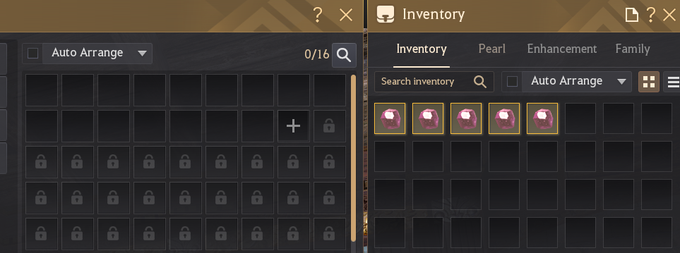
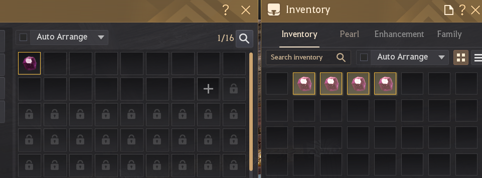
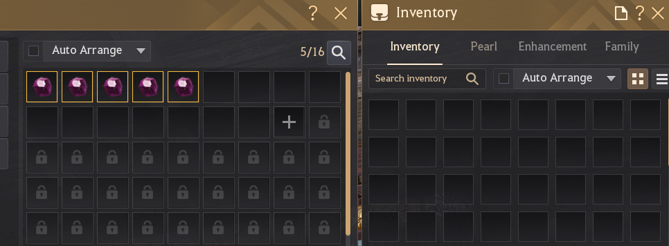
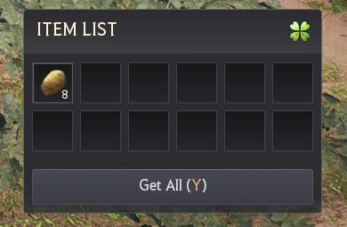

Results describe only what appeared while capture ran. Captures can contain endpoints, storage contents and player names — read Capture privacy before sharing them.
Start
Installation & setup
Install the package and prepare the computer for passive live capture, for item, calibration and Arena of Solare workflows.
Install
python -m pip install bdo-toolkit
Installs the bdo_toolkit package, the bdo-toolkit command and the required dependencies.
Live-capture prerequisites
Windows: install Npcap 1.88 or later. Domain-specific requirements live with each live API.
Other platforms: use the packet-capture backend available to Scapy. Physical live capture is unverified outside the Windows baseline below.
Permissions: run with permission to capture traffic. Elevate only when the driver or local security policy requires it.
Timing: start capture before the game action: before collecting or moving an item, logging in or switching characters, or opening the Solare Leaderboard for the first time after a restart.
A compatible capture backend, permission to capture and an active game session
Continuing item activity; inventory at a login or character switch; town storage at the first world load after a fresh launch; live calibration; the first Solare Leaderboard load after a restart
PCAP or PCAPNG replay
No capture driver, adapter or elevated shell
Repeatable development, tests, support diagnosis and post-patch verification
Most applications start live. Replay helps when a representative recording already exists, or the same evidence must be analyzed again.
Supported live-capture environment
The toolkit reads inbound, unfragmented IPv4/TCP packets.
Validated Windows baseline
Windows live capture requires Npcap 1.88 or later; older versions are unsupported. As of September 3, 2026, maintainer validation covers Windows 11 25H2, Python 3.14.0, Npcap 1.88, Scapy 2.7.0 and a wired Ethernet adapter. Later Npcap releases meet the version floor but aren’t independently validated.
This is a documentation support boundary. The validated machine had WinPcap API-compatible mode on; the toolkit doesn’t know whether that mode is required and never inspects the installed Npcap version. Other operating systems and Npcap modes aren’t part of maintainer validation. Replay uses no Npcap or adapter, but the recording must still contain supported BDO traffic.
Hardware, network card and driver
The live path runs through the physical or virtual adapter, its driver and offload behavior, operating-system routing, the capture backend (Npcap on Windows), Scapy, then the toolkit. Each layer can present the same connection differently, so one known-good network card isn’t a compatibility list for every card or driver.
Choose the options object
Live APIs build default options internally. Pass an options object only when this computer needs a different adapter, destination IPv4, server-port set, filtering mode or item-event queue size.
Workflow
Argument
Takes
Continuing item events
live_options=
LiveCaptureOptions: every shared packet setting, plus the packet and event queues
Replay opens no adapter. Pass its own ports= only when the recording used a non-default server port
Interfaces and VPN routing
An interface is the physical or virtual adapter the capture backend observes. Automatic selection follows the computer’s default IPv4 route with the default BDO server ports; it doesn’t inspect BDO’s own connections. Several adapters, a VPN or a local proxy can need a different interface, local IP or port set.
With a VPN, readable BDO traffic may appear on a virtual adapter. A local proxy such as ExitLag can expose the connection on loopback with a session-specific port. The toolkit can’t decode an encrypted tunnel, or traffic the capture backend can’t see.
Diagnose capture when automatic selection fails
Use this Windows walkthrough when capture starts but receives no game traffic, or after you change adapters, VPNs or routing services. It proposes settings from BDO’s current connections; it doesn’t apply them or prove that packets decode.
Inspect current connections
python -m bdo_toolkit.cli diagnose-capture
It lists grouped settings proposals: interface, local IPv4, server or proxy ports, and the underlying connections. Compatible game connections appear together, for example ports: 8884,8885,8889. Use the values from your own output; proxy ports can change after a reconnect.
Add --json for structured output. If Windows connection inspection times out, retry with --timeout 30; adapter enumeration isn’t covered by the timeout.
Review the proposals
game_port: BDO connections on its default server ports. Keep the grouped ports together.
local_proxy: BDO connects to a local peer. Check the peer name, then use the reported loopback interface, local IP and proxy ports.
other_tcp: other ports, often including 443, which may carry web or authentication traffic. Don’t merge them into a game-port proposal just because the adapter and local IP match.
Several proposals can be valid observations: compare their BDO process ID, adapter, kind and connections before you pick one. A proposal with (no matching adapter) can’t be applied; check Npcap and adapter availability first.
no_game: start BDO and retry.
no_connections: enter a game server and retry. IPv6-only connections aren’t supported.
unavailable: follow the reported inspection error. Discovery supports Windows only.
Apply one proposal
If your application has capture settings, copy the proposal’s interface, local IPv4 and complete port list into them, then restart its capture session. Use the adapter identifier from the output, not a guessed display name. local_ip restricts the inbound destination; it doesn’t select an adapter.
For a Python item listener, save this as capture_with_proposal.py next to a current opcodes.local and run it. It discovers settings again, asks for a proposal and listens for item activity until Ctrl+C.
from bdo_toolkit import capture_live, diagnose_capture
result = diagnose_capture()
for message in result.messages:
print(message)
if not result.proposals:
raise SystemExit("No settings proposals. Resolve the diagnostic above and retry.")
for number, proposal in enumerate(result.proposals, 1):
print(number, proposal.kind, proposal.interface,
proposal.local_ip, proposal.ports)
try:
number = int(input("Proposal number: "))
if not 1 <= number <= len(result.proposals):
raise ValueError("Proposal number is out of range")
options = result.proposals[number - 1].to_live_options()
except ValueError as error:
raise SystemExit(str(error)) from error
try:
for event in capture_live(
opcode_profile="opcodes.local",
live_options=options,
):
print(event)
except KeyboardInterrupt:
pass
Start a new capture session with the selected settings, with the VPN and game connection as they were during discovery.
Where the API allows, use an explicit session and read its CaptureEndpoint after startup.
Perform one known in-game action once capture is ready, then check the workflow’s output and, where exposed, its final capture health or acquisition counters.
Install the local file that lets item-event and item-state workflows recognize the current patch’s traffic. It’s a decoder profile, not a character or account profile; Arena of Solare doesn’t use one.
Get a profile
Latest maintained NA/EU profile
For current NA/EU traffic, fetch the latest profile that maintainers captured, verified and promoted:
It downloads and verifies once; capture never updates the profile in the background. A locally calibrated profile stays on your computer and is never uploaded.
Pass the path as opcode_profile= whenever an item workflow starts. Quickstart uses the same opcodes.local.
Verify it in game
Run Quickstart, then gather an item, collect a mob drop or withdraw something from town storage. Check that the printed item ID, quantity and source match what happened.
Check DecoderHealth and the calibration result before blaming capture
Start
Quickstart
Run one small Python program, perform an item action in game, and print the first item event the toolkit sees.
Capture one item event
from bdo_toolkit import LiveCaptureSession
with LiveCaptureSession(opcode_profile="opcodes.local") as session:
print("Listening for item activity...")
for event in session.events():
print(event.format_human())
break
from contextlib import closing
from bdo_toolkit import replay_pcap
with closing(replay_pcap(
"path/to/session.pcapng",
opcode_profile="path/to/matching-opcodes.json",
)) as events:
for event in events:
print(event.format_human())
break
Live: run python quickstart.py, then gather an item, collect a mob drop or withdraw something from town storage. Replay: point both paths at a recording and the profile from its patch.
ITEM_RECEIVED means an item entered inventory, and Gathering is the in-game source; then come the raw item ID, quantity and observed instance. Other actions produce other event types and source labels.
Listen for item changes as they happen: one BDOEvent per decoded record, filtered down to what your application keeps.
From a game action to Python
Item activity is a stream of changes observed after the listener starts: gathering, a monster drop, a storage withdrawal or a deposit. It doesn’t reconstruct what inventory or storage already held; for that, see Inventory & town storage.
game action→capture_live()→BDOEvent→EventFilter→your code or writer
A live addition to town storage was proven. source names a proven origin such as Player Inventory or Worker Production, and storage_id names the destination. Withdrawals are item_received from Storage.
An item was shown in a preview before collection. Not proof of receipt; needs separately calibrated preview support.
Most applications start with event_type, source, item_id and quantity. Time, enhancement, storage identity, formatting and serialization are on the same object. The toolkit returns raw game IDs; item names and market data are yours to supply.
EventFilter decides delivery once an event is decoded and any storage source is classified. Event writers turn a delivered event into a console line or a JSONL record; they don’t capture traffic.
from bdo_toolkit import EventFilter, capture_live
confirmed_activity = EventFilter(
event_types={"item_received", "storage_delta"},
)
for event in capture_live(
opcode_profile="opcodes.local",
event_filter=confirmed_activity,
):
fields = [event.event_type]
if event.source is not None:
fields.append(event.source)
if event.storage_id is not None:
destination = event.storage_name or (
f"UNKNOWN_STORAGE(0x{event.storage_id:08x})"
)
fields.extend((destination, f"0x{event.storage_id:08x}"))
fields.extend((event.item_id, event.quantity))
print(*fields)
EventFilter keeps the two confirmed activity types. Character-load records, unresolved neutral records and loot_preview stay out.
capture_live() starts passive capture and blocks while it waits for traffic.
Each pass receives one BDOEvent; your loop decides whether to print, count, store or forward it.
Guides/Item events
Track mob drops
Keep confirmed items collected from defeated monsters and total each raw item ID for the current run.
Run the finished example
python examples/live_mob_drops.py
Leave the counter running and return to the game.
Defeat monsters and collect their drops.
Press Ctrl+C when you’re done.
Read the result
stdoutrepresentative · totals reset on restart
Collect mob drops in game. Press Ctrl+C to stop.
item_id=1000707 quantity=1 total_this_run=1
item_id=1000707 quantity=2 total_this_run=3
item_id=44195 quantity=1 total_this_run=1
quantity is the amount in one observed receipt. total_this_run adds those receipts for this process run; it isn’t the character’s inventory quantity.
Build it yourself
from collections import Counter
from bdo_toolkit import EventFilter, capture_live
totals: Counter[int] = Counter()
mob_drops = EventFilter(
event_types={"item_received"},
sources={"Mob Drop"},
)
for event in capture_live(
opcode_profile="opcodes.local",
event_filter=mob_drops,
):
totals[event.item_id] += event.quantity
print(event.item_id, event.quantity, totals[event.item_id])
An event passes only if it is an item_receivedand its source is Mob Drop. The Counter is your application’s state; the toolkit keeps delivering ordinary BDOEvent values.
Keep confirmed town-storage additions whose captured evidence attributes the item to worker production.
Run the finished example
python examples/live_worker_productions.py
In the worker window, pick an active task whose output you recognize and note its destination town.
Start the listener before the task finishes, then keep playing.
Once the production reaches town storage, read the terminal line and press Ctrl+C.
Read the result
stdoutrepresentative · one confirmed addition
Waiting for worker production to reach town storage. Press Ctrl+C to stop.
source='Worker Production' destination='Heidel' storage_id=0x00000020 item_id=4003 quantity=20
Read cause and destination separately:
source names the inferred producing system. It’s classifier output, not a raw context-byte label.
storage_id names the destination; storage_name is optional display text. An unregistered key keeps its number with storage_name=None, so you can show UNKNOWN_STORAGE(0x…) without inventing a name.
The event carries no worker identity, production node, task name or facility.
Build it yourself
from bdo_toolkit import EventFilter, capture_live
worker_productions = EventFilter(
event_types={"storage_delta"},
sources={"Worker Production"},
)
for event in capture_live(
opcode_profile="opcodes.local",
event_filter=worker_productions,
):
destination = event.storage_name or (
f"UNKNOWN_STORAGE(0x{event.storage_id:08x})"
if event.storage_id is not None
else "unknown"
)
print(
event.source,
destination,
event.storage_id,
event.item_id,
event.quantity,
)
storage_delta proves live storage activity. Requiring sources={"Worker Production"} then keeps the additions whose bounded classifier evidence points to worker production. Decoder problems still reach you through diagnostics.
Guides/Item events
Filter item activity
Choose which decoded BDOEvent values reach your application, from delivery presets to exact multi-field rules.
Choose the stream you want
Filtering happens after decoding and storage-origin classification. Pass one filter to the capture API, and only matching events enter your loop.
activity() leaves out character-load snapshot events and neutral inventory_record and storage_record values.
Combine exact criteria
from bdo_toolkit import EventFilter, capture_live
heidel_worker_items = EventFilter(
event_types={"storage_delta"},
sources={"Worker Production"},
storage_ids={0x0020},
item_ids={4607, 7003},
)
for event in capture_live(
opcode_profile="opcodes.local",
event_filter=heidel_worker_items,
):
print(event.item_id, event.quantity)
Values inside one criterion are alternatives: item 4607 or 7003. Criteria add up, so the event must also be a storage_delta to Heidel with worker-production evidence.
Wrap one value in a collection: storage_ids={0x0020}. A bare int, str or bytes raises TypeError.
None leaves a criterion unrestricted; an empty iterable rejects every event.
sources matches origin or context labels such as Worker Production and Player Inventory. For a town, use storage_ids.
An explicit filter doesn’t inherit the activity preset: a source-only or storage-only filter can match non-activity records. Add event_types to stay activity-only.
Filters are immutable. Build a new one when the policy changes.
TCP packets are only transport: one packet can hold several BDO messages, and one message can span several packets. The toolkit reassembles each server-to-client flow before it looks for complete length-framed messages. The selected profile then supplies the opcode and byte geometry to decode item records from a message.
Term
Here it means
Packet
One captured TCP segment; never an event boundary
Message
One complete reassembled BDO wire unit, with its own length and opcode
Record
One item entry decoded from a message; a repeated message can hold several
Event
The immutable BDOEvent delivered after classification and filtering
Each event keeps its message’s timestamp, length, opcode and record position, plus a provisional per-flow stream position when available. None of that makes the stream a complete inventory ledger.
Framing and profile selection fail closed
Capture that attaches midstream starts unsynchronized. A generic message boundary needs framing evidence: a known opcode, an exact standalone frame or consecutive plausible lengths. Retransmission and out-of-order delivery are resolved per directional flow; bytes the capture missed can’t be rebuilt.
One explicit, immutable profile compiles into runtime layouts, and a candidate must satisfy its layout’s message length and item geometry. Receipts, loot previews and storage records need an independent top-level boundary; a nested signature alone can’t produce an event. Inventory hydration can also recover from two fully decoded, exactly adjacent wrappers on the same TCP flow generation, even across a sequence-number wrap. A differently segmented retransmission can’t give already-framed payload new boundaries.
Overlapping same-opcode loot-preview layouts and contradictory storage geometry are rejected. Where an inventory-transfer layout supports structural validation, a failed marker, instance or repeated-record check is final: those bytes aren’t retried through weaker stride decoding.
Storage records take a classification detour
Most events go straight to delivery. Storage records first pass two stateful classifiers, because the decoded item fields alone don’t prove a live addition versus existing character-load state.
decoded storage record→worker or manual origin evidence→hydration-cohort evidence→final event type→EventFilter
Evidence
Becomes
A confirmed worker companion chain
storage_delta, source="Worker Production". Worker evidence beats a nearby manual signal
No worker chain, but a calibrated matching source decrement
storage_delta, source="Player Inventory"
Live activity proven without worker or manual evidence
storage_delta, source=None
A multi-destination character-load cohort
storage_snapshot, source=None
No independent live or hydration proof
neutral storage_record, source=None
The origin classifier goes first, so real deposits don’t inherit a nearby hydration epoch. Hydration then groups still-neutral records by TCP flow generation, opcode, timing and destination diversity. Neither stage infers cause from a town name or a single context byte.
EventFilter runs after both stages: an activity filter sees an evidence-promoted storage_delta, and sources sees the final label. Decoder diagnostics stay out of band and bypass the filter.
Wire time and delivery order can differ
Origin and hydration decisions use bounded lookahead. While a storage event waits for evidence, a later non-storage event can be delivered first; the storage event keeps its earlier timestamp.
Equal timestamps and separate TCP flows still have no universal total order. extra["stream_sequence"] is provisional per-flow metadata, not a cross-flow ordering key.
Current bounds and backpressure
State
Current bound
Why it matters
Raw-packet handoff
4,096 packets by default; the native callback never blocks
The packet worker advances the clock at drained queue boundaries
Bytes already accepted for decoding are processed before an idle timeout abandons their gap
Worker-origin correlation
32 following complete messages or 2 seconds; at most 64 pending operations per flow, 4,096 in total
Unconfirmed or contested evidence fails neutral instead of growing without limit
Manual-origin correlation
The two most recent earlier complete messages on the same flow
A calibrated decrement must match; a coincidental quantity can’t override instance-aware geometry
Hydration classification
30-second inventory-anchored epoch; storage bursts split after a 0.5-second gap or 1 second in total
8 destinations prove an anchored cohort. The storage-only fallback needs 17 destinations and at least 8 records
Pending hydration records
10,000 events
An oversized unproven cohort flushes as neutral records instead of taking unbounded memory
Filtering doesn’t save capture work: candidate traffic is still framed and decoded before values are matched. The runtime can skip the origin-correlation graph when the filter can’t deliver storage events and no origin_observer is set.
The same session boundaries, run on a private worker
Cancellation and awaited methods keep the synchronous failure and cleanup contract
A live capture_seconds deadline belongs to the session and keeps running while your code pauses after a yielded event. On stop, capture joins, every accepted packet ahead of the worker sentinel is decoded, TCP reassembly finishes, and pending origin and hydration decisions finalize. Shutdown-finalized events stay drainable before a retained error is raised.
Which deduplicated storage-decoder warning explains incompatibility or an unresolved destination?
The signals are independent: a locally clean capture can still use a stale profile, and storage_status="not_observed" proves nothing either way. Values read mid-capture are observations; use the final post-stop values when completeness matters.
Guides
Inventory & town storage
Capture one character load and query a finite snapshot of the inventory and town storage the game sent. Any login or switch gives inventory; the first world load after a fresh launch also gives storage.
From character load to one snapshot
CharacterLoadSession passively captures whatever records the game sends, and stop() assembles them into one immutable ItemStateSnapshot. It doesn’t update after capture ends.
CharacterLoadSession.stop()→ItemStateSnapshot→inventory or storages→your query
Selection is conservative: only the latest inventory generation and storage sweep become current state. A validated empty inventory still counts as observed, so an earlier character’s items are never carried forward. The rules: Item-state internals.
Start capture before the right load and stop once the world settles. Any login or switch gives inventory; the first world load after a fresh launch also gives town storage.
Run the finished example
python examples/live_character_load_snapshot.py
Wait until the terminal says capture started.
Log in or switch characters for inventory, or make the first world load after a fresh launch for storage.
Once the character is playable and the world has settled, press Enter.
The example checks the profile path, handles Ctrl+C and prints format_item_state() for troubleshooting.
Read the result
stdoutcounts vary by load
CHARACTER LOAD SNAPSHOT DIAGNOSTIC
Storage decoder: compatible (... observed wrappers decoded)
Hydration packets detected; trigger is unclassified (initial login vs character switch).
INVENTORY SNAPSHOT
183 serialized records: 179 occupied item stacks + 4 currency balances
STORAGE SNAPSHOT
27/34 known destinations observed
642 unique occupied item stacks from ... decoded snapshot records
The trigger is never classified: a login and a switch look the same on the wire. Registered towns missing from the capture are reported, not assumed empty.
Build it yourself
from bdo_toolkit.item_state import CharacterLoadSession
with CharacterLoadSession(opcode_profile="opcodes.local") as session:
input(
"Capture started. For storage, enter the world for the first time "
"after a fresh game launch; a later character switch captures "
"inventory only. Press Enter after the world has settled: "
)
snapshot = session.stop()
print(f"Hydration detected: {snapshot.hydration_detected}")
print(f"Inventory observed: {snapshot.inventory.hydration_observed}")
print(f"Storage decoder: {snapshot.decoder_health.storage_status}")
Construction loads and pins the profile for this one session.
Entering the block calls start(), which returns once passive capture is ready.
You make the load. No marker ends it, so pressing Enter is your stop decision.
stop() drains capture, assembles state and returns the snapshot. Context exit only cleans up.
from bdo_toolkit.item_state import CharacterLoadSession
with CharacterLoadSession(opcode_profile="opcodes.local") as session:
input("Log in or switch characters, then press Enter when settled: ")
snapshot = session.stop()
inventory = snapshot.inventory
if not inventory.hydration_observed:
raise RuntimeError("No character inventory was observed")
if not inventory.items:
print("No occupied inventory stacks were observed")
for item in inventory.items:
label = item.container_name or "Unclassified"
print(item.item_id, item.quantity, label)
Use named() for a user-facing name (case-insensitive) and by_id() when persisting — numeric storage_id is authoritative.
Build it yourself
from bdo_toolkit.item_state import CharacterLoadSession
town_name = "Heidel"
with CharacterLoadSession(opcode_profile="opcodes.local") as session:
input("Enter the world for the first time, then press Enter: ")
snapshot = session.stop()
if snapshot.decoder_health.storage_status != "compatible":
raise RuntimeError("Town-storage decoding is unavailable")
storage = snapshot.storages.named(town_name)
if storage is None:
raise LookupError(f"{town_name} was not returned by this snapshot")
if not storage.current_state_observed:
raise RuntimeError(f"{town_name} has no selected current state")
if storage.current_empty:
print(f"{town_name}: explicitly observed empty")
else:
for item in storage.items:
print(item.item_id, item.quantity)
Guides/Inventory & town storage
Find an item across the snapshot
Total one exact item ID across observed inventory and selected current town storage.
Run the finished example
Set TARGET_ITEM_ID = 7003 and its display label "Potato" for your application, then run:
python examples/live_item_state_search.py
Press Enter once the world settles. The label is display-only; the toolkit doesn’t translate item IDs into names.
Read the result
stdoutobserved snapshot only
Potato (item_id=7003)
Character inventory: 38
Town storage: 621
Velia: 421
Heidel: 200
Observed total: 659
The observed total isn’t an account total. A zero means no retained match in that source, and missing coverage, unavailable storage decoding or identity-unresolved records can lower it. The example reports an unavailable source and prints the combined total only when both sources were observed.
Build it yourself
from bdo_toolkit.item_state import CharacterLoadSession
item_id = 7003
with CharacterLoadSession(opcode_profile="opcodes.local") as session:
input("Enter the world for the first time, then press Enter when settled: ")
snapshot = session.stop()
if not snapshot.hydration_detected:
raise RuntimeError("No character-load item state was detected")
inventory_total = None
if snapshot.inventory.hydration_observed:
inventory_total = snapshot.inventory.quantity_for(item_id)
print(f"Character inventory: {inventory_total}")
else:
print("Character inventory: unavailable")
storage_total = None
if snapshot.decoder_health.storage_status == "compatible":
storage_total = snapshot.storages.total_quantity(item_id)
print(f"Town storage: {storage_total}")
for storage in snapshot.storages.locations_for(item_id):
label = storage.name or f"UNKNOWN_STORAGE(0x{storage.storage_id:08x})"
print(f" {label}: {storage.quantity_for(item_id)}")
else:
print("Town storage: unavailable")
if inventory_total is not None and storage_total is not None:
print(f"Observed total: {inventory_total + storage_total}")
How character-load traffic becomes one observational ItemStateSnapshot: atomic decoding, generation and sweep selection, identity merging and fail-closed limits.
From traffic to one snapshot
captured TCP→framed messages→snapshot records and empty envelopes→generation and sweep selection→instance merge→ItemStateSnapshot
Character-load decoding reuses the item-event engine for TCP reassembly, framing, profile validation and low-level records. Inventory hydration becomes inventory_snapshot. Storage passes through neutral classification and becomes storage_snapshot only when hydration evidence is strong enough.
The assembler also reads selected raw envelopes. A valid count-zero wrapper holds no item record, so its envelope is the only evidence that an inventory group or a town is explicitly empty.
Assembly runs once, at stop() or at end of file. The result is immutable and never applies later item events.
Inventory batches are validated atomically
The profile supplies the opcode, the one-record base length and the item, quantity, context and instance geometry. For a multi-record wrapper, runtime finds a plausible declared count in the prefix and derives the stride from message length, base length and count. The division must be exact, every offset must line up, and every item ID, quantity and instance must validate.
One failing record rejects the whole wrapper. There is no valid-looking prefix and no marker-scan fallback.
Container and slot metadata are a weaker, separate inference: first a record-tail window, then a wrapper-header column, both over complete sibling groups and recognized raw codes. An ambiguous layout or unknown code withholds container metadata for that opcode but keeps valid records in unclassified_records. A known balance needs both the container code and the item ID.
Storage uses stronger finite-capture evidence
Wrapper geometry is profile-driven: the calibrated destination and count fields must agree with message length and full record validation. The numeric destination is kept even without a registry name; no other field is ever substituted.
The live item-event stream leaves an unproven storage group neutral. The item-state assembler has more evidence — a selected inventory boundary, retained count-zero envelopes and the surrounding sweep — so it can prove sparse hydration from an inventory-anchored cohort, or fold timing-split neutral groups into an already proven sweep.
That reconciliation never crosses a confirmed live storage mutation, and stays within one TCP flow generation, storage opcode, bounded inventory epoch and inferred sweep. Live item events keep their fail-neutral behavior.
How current state is selected
Stage
Current inference
Selected result
Inventory generation
A new TCP flow generation, or more than one second between record-bearing or count-zero inventory wrappers, starts another generation
Only the latest is assembled. An empty latest generation clears earlier items and still anchors its storage epoch.
Storage destination block
A change of destination, flow/opcode or empty state, or a gap over one second, closes the block
Tightly timed chunks for one destination stay one block
Storage sweep
The first previously closed destination seen again starts another sweep
The latest sweep becomes current state
A selected count-zero block clears earlier items for that destination. A destination seen only in an earlier sweep stays for provenance with current_state_observed=False, and its old items are withheld — safer than carrying stale contents into a sweep that may itself be partial.
With neither an inventory record nor a count-zero inventory wrapper there is no inventory boundary. The assembler then keeps all storage diagnostics, uses only the latest sweep for contents, records generation_selection="all_observed_storage_no_inventory_boundary" and warns that the evidence may span several loads.
Instance identity controls merging
Inventory is keyed by the decoded item instance, storage by the storage instance within one selected destination block. Repeats of the same opaque identity collapse to the latest record; diagnostics keep the raw and duplicate counts.
A record without its calibrated eight-byte instance never gets a synthetic key. It shows up in missing-identity diagnostics but is left out of stacks, counts, totals, balance interpretation and duplicate inference, so a damaged layout can’t invent state.
Specific missing-identity, registry and sweep gaps
Account-wide completeness or a protocol end marker
Current bounds and inference thresholds Optional referenceShow detailsHide details
Implementation safeguards and inference thresholds, not protocol promises.
Mechanism
Current value or rule
Inventory-generation split
New TCP flow generation, or more than 1 second between consecutive inventory messages
Storage destination-block split
Destination, flow/opcode or empty state changes, or more than 1 second between groups
Inventory-anchored storage epoch
30 seconds; sparse finite proof needs at least 8 distinct destinations and at least one validated empty envelope
Storage hydration burst
Split after a 0.5-second gap between groups, or 1 second in total
Relevant framed evidence
10,000 retained frames by default
Snapshot records
50,000 retained records by default
Relevant raw bytes
64 MiB retained by default
The accumulator checks before retaining an over-limit frame or record and raises ItemStateCaptureLimitError — never a silently truncated snapshot. Defaults and exception fields: capture limits.
Patch-recovery boundary
Calibration can update opcodes, base lengths, record spacing and the item, quantity, instance, destination and count positions. Runtime then derives the multi-record stride, the inventory count and container metadata from them.
A redesigned record, a new count encoding, a changed destination meaning or a changed hydration relationship needs decoder work. Ambiguity fails closed — rejected frames, missing metadata, neutral records, incompatible decoder health or no snapshot — never a guessed state.
Guides
Calibration
Keep item decoding current after a patch: install a maintained profile when one exists, or calibrate your own from controlled in-game actions.
Why calibration exists
Item decoding uses an explicit local profile that says where current-patch messages carry item IDs, quantities, instances, storage destinations and repeated records. A weekly patch can move those layouts, and the old file can still load normally while a listener quietly produces nothing.
Calibration watches a known item while you perform controlled game actions, then derives message specs from that evidence. Capture and analysis work without a usable old profile and write nothing; saving the result is a separate decision.
Choose how to recover after a patch
A maintained profile isn’t generated automatically: a maintainer captures current traffic, verifies it and promotes it. Right after maintenance, the stable channel can be missing or still point at the previous patch.
stop() analyzes the retained frames and returns a read-only CalibrationResult. There’s no global ok flag, because success is judged per profile family: events_found names the promoted families and specs holds their layouts.
A separate structural classifier; doesn’t use the item profile
Default writes keep unrelated families and back up an existing file before an eligible change. Calibration can recover moved opcodes and record positions, but not a fundamentally redesigned item record, count encoding, destination identity or evidence relationship.
Guides/Calibration
Manual calibration after a patch
Rebuild the item profile yourself with three controlled storage moves, then verify both transfer directions in a fresh listener.
Calibrate in three moves
Prepare five unstackable items
This guide uses five Magic Crystal of Infinity - Skill, raw item ID 15156: cheap, widely available and unstackable. Another unstackable item works too; set ITEM_ID to its raw ID.
Use five matching copies of the item.
Put all five in character inventory and none in the chosen storage.
Pick one unambiguous registered town, such as Velia, Heidel, Calpheon City or Olvia.
Don’t use Muzgar, Velandir, Yukjo Street, Godu Village or Bukpo.
Starting state: before captureTown storage on the left, character inventory on the right
Before captureFive crystals in inventory

Storage 0Inventory 5
Reach this state before launching the example, and move no other copies of the watched item during calibration.
Run the example and make the moves
python examples/live_calibrate_profile.py
Wait for the prompt before touching storage:
stdoutthe opening prompt
Listening in the background.
Perform the following in-game actions yourself while capture remains open.
Use one unambiguous town such as Velia, Heidel, Calpheon City, or Olvia.
Do not use Muzgar, Velandir, Yukjo Street, Godu Village, or Bukpo.
Using unstackable item 15156 (per-record quantity 1):
deposit one item, then deposit the remaining four,
then withdraw all five matching items in one action.
Press Enter when all three moves are done...
Make each move while the prompt waits
Move only these five crystals. The example keeps listening while the terminal waits for Enter.
Three in-game actions, then one terminal stepDeposit 1 → deposit 4 → withdraw 5 → Enter
Action 1Deposit one

Storage 1Inventory 4
Action 2Deposit the remaining four

Storage 5Inventory 0
Action 3Withdraw all five
Storage 0Inventory 5
Step 4Return to the terminal
Press Enter when all three moves are done...
Key EnterNext analyze & write
Reach the three pictured states in order. When all five crystals are back in inventory, return to the terminal and press Enter to analyze and write the profile.
Read the result
stdouta successful run · abridged; frame count and backup name vary
collected 1439 frames
scanned 1439 frames
...
detected direction(s): inventory->storage, storage->inventory
...
wrote opcodes.local
backup at opcodes_backups\opcodes.local.bak.20260823014827341818
...
This confirms both transfer directions and the local write. The backup line appears only when opcodes.local already existed. An incomplete run exits earlier with incomplete transfer profile; missing ... and writes nothing.
Depositing one crystal, then four, produces two distinct repeated-record counts; together they prove the storage destination and record-count fields. Withdrawing all five proves the reverse direction. quantity=1 describes each serialized record, not the batch size.
What runtime uses
The transfer runtime needs all three families: INVENTORY_TRANSFER (the withdrawal and receipt path), STORAGE_ITEM_DELTA (destination-storage records) and SOURCE_STACK_DECREMENT (manual-deposit evidence). Missing any one makes the calibration incomplete, and the example refuses to write it. SOURCE_CONTAINER_DECREMENT and SOURCE_ITEM_REFERENCE can also appear as audit evidence, but runtime ignores their saved entries. Full contract.
These uppercase names are profile families, not lowercase BDOEvent.event_type values.
Build it yourself
from pathlib import Path
from bdo_toolkit.calibration import CalibrationSession, update_profile
profile = Path("opcodes.local")
required = {
"INVENTORY_TRANSFER",
"SOURCE_STACK_DECREMENT",
"STORAGE_ITEM_DELTA",
}
with CalibrationSession(item_id=15156, quantity=1) as session:
input("Deposit 1, deposit 4, withdraw all 5; then press Enter: ")
result = session.stop()
missing = required - result.events_found
if missing:
raise RuntimeError(f"incomplete calibration: {sorted(missing)}")
update = update_profile(result, profile)
print(result.summary())
print(update.summary())
The constructor declares the known per-record value; action="auto" is the default and analyzes both directions.
Entering the context starts capture; stop() returns the result.
The code checks events_found, because nonempty specs doesn’t prove every required family was recovered.
Both lines together verify the practical storage-addition and withdrawal paths.
Guides/Calibration
Add loot-preview support
Optionally teach the item profile to recognize what a gathering or manual-loot window offers, before anything is collected.
What it detects
The game can show an Item List before collection, for example after gathering or when you manually loot a defeated mob. Loot-preview support recognizes the traffic that fills that window and delivers a loot_preview event when it appears. It reports the offered item, not whether the window is open.
It’s optional and doesn’t affect detecting items entering inventory, which uses the separate item_received path. Skip this page unless your application needs to know what the preview showed.
Choose a known preview
The example targets Potato, raw item ID 7003. Use a repeatable preview you know shows Potato, or set ITEM_ID and ITEM_NAME to the exact item your preview shows.
The displayed amount varies, so the example uses quantity=None and anchors on the item ID. No town storage or five-crystal sequence is involved.
Run the finished example
python examples/live_calibrate_loot_preview.py
Wait until the terminal says it’s listening.
Gather a wild potato and wait for the Potato Item List.
Once the window has fully appeared, return to the terminal and press Enter.
Start capture firstGather once, then confirm in the terminal
TerminalWait for the prompt
Listening in the background.
Gather a wild potato and wait for the Item List containing Potato (7003).
After the Potato Item List appears, return here and press Enter...
Capture listeningTarget 7003
In gameGather a wild potato

Item PotatoShown 8
NextWhen the Potato window appears, return to the terminal and press EnterEnter
This screenshot shows eight Potatoes. With quantity=None, calibration anchors on item ID 7003 whatever the amount.
Read the result
A successful run writes the loot-preview scope to opcodes.local. If the script says loot preview was not calibrated, no update was attempted.
from pathlib import Path
from bdo_toolkit.calibration import CalibrationSession, update_profile
profile = Path("opcodes.local")
with CalibrationSession(
item_id=7003,
quantity=None,
action="loot-preview",
) as session:
input("Gather a wild potato; after the Item List appears, press Enter: ")
result = session.stop()
if "LOOT_PREVIEW" not in result.events_found:
raise RuntimeError(result.summary())
update = update_profile(result, profile, action="loot-preview")
print(result.summary())
print(update.summary())
item_id=7003 anchors the known Potato record.
quantity=None means “don’t constrain the watched quantity”, not that the message has no quantity field.
events_found uses the uppercase family LOOT_PREVIEW; delivered events use lowercase loot_preview.
Verify the delivered event
Start a fresh process so the decoder loads the changed profile, and request preview events explicitly:
from bdo_toolkit import EventFilter, capture_live
preview_only = EventFilter(event_types={"loot_preview"})
for event in capture_live(
opcode_profile="opcodes.local",
event_filter=preview_only,
):
print(event.source, event.item_id, event.quantity)
Open the same preview again; each appearance should print one line.
Guides/Calibration
Fix an incomplete calibration
Match the terminal message to one controlled retry, and verify the result before changing any opcode, offset or profile field by hand.
Locate the failure stage
Stage
Evidence
Capture
The script never reaches the listening prompt, or the capture backend fails
Analysis
A CalibrationResult comes back with missing families, or scoring raises before a result exists
Persistence
update_profile() refuses, or fails before or during the write
Runtime verification
The file was written, but a new listener doesn’t deliver the expected event
Inspect a returned result
from bdo_toolkit.calibration import CalibrationResult
def inspect_result(result: CalibrationResult) -> None:
print(result.summary())
print("families:", sorted(result.events_found))
print("directions:", sorted(result.detected_directions()))
for reason in result.ignored:
print("ignored:", reason)
if result.retention.truncated:
print("Retry with a shorter, cleaner capture.")
Call inspect_result(result) right after result = session.stop() when a two-step calibration comes back incomplete.
ignored lists why candidate layouts were rejected; it holds no application events.
Confirm item ID 15156, keep QUANTITY = 1, use an allowed town, and repeat the whole deposit 1, deposit 4, withdraw 5 sequence
loot preview was not calibrated ...
Check the raw item ID, start capture before the preview, let the window load, and retry one clean preview
destination-field
Move to an allowed town and repeat the full transfer workflow
record-count-field
Keep deposit 1 and deposit 4 separate, both finished before the withdrawal
live retention truncated
Repeat a shorter clean run and press Enter right after the final action
Make the retry unambiguous
Start capture before the first storage move or before opening the preview.
For transfers, use five matching unstackables in one allowed town, and do nothing else with items until capture stops.
For a preview, show the exact item ID configured in the script and avoid other item windows.
Press Enter only after the final move, or once the preview has fully loaded.
The profile updates, but verification is quiet
After transfer calibration:
Stop any logger that was running when the profile changed.
From the repository root, start python examples/live_transfer_log.py again and check the printed profile path.
Wait for the listening message, then repeat one deposit and one withdrawal.
Read any decoder diagnostic printed separately.
After loot-preview calibration: start a fresh listener with the explicit loot_preview filter from Verify the delivered event and reopen the same preview. The transfer logger deliberately excludes previews.
If storage decoding stays incompatible after another clean calibration, keep the terminal diagnostic for the report.
Guides/Calibration
Calibration internals
How controlled item traffic becomes fail-closed profile geometry: direction signals, record counts and runtime validation.
From captured traffic to a profile
captured messages→known-item candidates→direction and geometry proof→CalibrationResult→update_profile()→runtime validation
Calibration collects complete inbound messages around the known item action. Analysis finds plausible item records, classifies their transfer direction, and proves the offsets and repeated-record shape each profile family needs. Only an unambiguous candidate becomes a MessageSpec.
The CalibrationResult is read-only. Saving is a separate update_profile() step, and a fresh decoder validates the new file again when it loads. Specs store normalized one-record geometry; the observed action totals are evidence, not runtime constants.
Transfer families and runtime use
The transfer runtime needs INVENTORY_TRANSFER, STORAGE_ITEM_DELTA and SOURCE_STACK_DECREMENT. Without any one of them, transfer calibration is incomplete.
INVENTORY_TRANSFERrequired
Storage withdrawals, item_received, and inventory hydration and state.
STORAGE_ITEM_DELTArequired
Storage deposits, destination-town identity, and storage hydration and state.
SOURCE_STACK_DECREMENTrequired
Reliably promotes a manual deposit to storage_delta with source="Player Inventory".
SOURCE_CONTAINER_DECREMENTnot used at runtime
Kept only as calibration and audit evidence. A context-after-quantity layout is allowed only when an exact receipt-instance anchor proves the companion.
SOURCE_ITEM_REFERENCEnot used at runtime
Kept only as calibration and audit evidence.
LOOT_PREVIEW is a separate, optional event-producing family. Automatic transfer calibration doesn’t look for it; the loot-preview walkthrough uses an explicit action and keeps the transfer families.
How transfer direction is classified
The default action="auto" evaluates both transfer recipes and records every candidate’s decision in DirectionEvidence. Direction comes from structural signals, not an opcode table.
Observed signal
Means
A high-entropy source-context label before the item record
The item is entering inventory
A validated storage context before the item record
The item is entering storage
A small preceding same-flow message carrying the watched item ID
Fallback evidence of entering storage, used only when no intrinsic signal fired
Both intrinsic signals, or no usable signal in automatic mode
The candidate is withheld; calibration doesn’t guess
How storage-wrapper geometry is proven
Before promoting STORAGE_ITEM_DELTA, calibration must uniquely identify both the destination field and the declared record-count field. Across the captured deposits it intersects registered-destination candidates with two-byte count candidates whose values fit the observed record geometry. It needs at least two distinct validated deposit counts; the one-record and four-record deposits provide that cross-check.
The excluded-town restriction applies only while learning the offset. A profile calibrated in an unambiguous town handles those destinations normally.
If either column stays ambiguous, CalibrationAuthorityError is raised before any result or write. Once both are proven, calibration records the one-record base length, context_offset and record_count_offset. Runtime derives each wrapper’s stride from its declared count, actual length and that base, and validates every declared record before emitting any neutral storage record.
How source-decrement geometry is proven
SOURCE_STACK_DECREMENT supplies the inventory-side evidence that identifies a manual storage deposit. Quantity and instance field order aren’t treated as patch constants: calibration anchors the exact source instance when available, tests non-overlapping quantity phases and measures the repeated-record period.
For a repeated decrement, only one longest field-valid shape matching the storage record count is promoted. Ambiguous phases, overlapping fields and stride aliases that skip records are withheld without discarding independently proven families. At runtime, an instance-aware spec never falls back to a coincidental quantity when its instance field is empty or invalid.
Storage-source classification is a separate runtime stage. A confirmed worker companion chain wins and assigns source="Worker Production"; otherwise calibrated decrement evidence can assign source="Player Inventory". With neither signal, proven live activity gets source=None, and a record lacking independent live or hydration proof stays storage_record.
Evidence retention and scope
Live calibration keeps the newest contiguous evidence tail under two default bounds: 50,000 frames and 64 MiB of payload. Analysis scores that retained tail, not every frame observed; CalibrationRetention reports the observed, retained, discarded and truncated counts.
A truncated result covers only the newest tail. Offline calibrate_pcap() analyzes a finite recording without the live bounds.
Patch-recovery boundary
Calibration can relearn
Needs decoder work
Message opcodes and normalized one-record lengths
A redesigned shared item-record structure
Item, quantity, instance, context and count positions
A new count encoding or a changed destination-ID meaning
Repeated-record spacing within current invariants
Changed origin-evidence or hydration-cohort relationships
Guides
Arena of Solare
Capture one Arena of Solare Leaderboard load, save it, and reuse the recording for overall rankings, class tables and player lookups.
From one leaderboard load to reusable data
The leaderboard updates daily on the game’s schedule; players can’t refresh it. Start capture before the Leaderboard tab’s first load after restarting the game. The toolkit passively observes the two responses and returns one SolareCaptureResult. It emits no BDOEvent objects and never controls the game.
start capture→open Leaderboard once→save PCAPNG→SolareCaptureResult→replay and query
The class top-20 tables, flattened. Not a global top 620.
The two responses decode independently. A name can appear in either or both, and optional values are never copied between row types. Check overall_capabilities or class_table_capabilities before relying on Elo or performance fields.
Capture once, replay as often as needed
Save the first successful live load as PCAPNG. That one file then drives every replay and query example, without reopening the game or waiting for another load.
If the Leaderboard was already opened this game session, restart Black Desert.
Wait for the capture-ready message before touching Arena of Solare.
Open the Leaderboard tab once. The broader Arena menu isn’t enough.
Leave the tab visible while both leaderboard responses arrive.
The script stops on confirmation or after its 120-second default deadline. Ctrl+C ends it earlier.
Recording never overwrites a file, so use a new path for each attempt. Without --save-pcap, the script captures and reports the same way but writes nothing.
Example outputrepresentative, abridged · paths and milestones vary
[capture-ready] passive Solare capture is ready ..., recording ...\solare-leaderboard.pcapng; open the Leaderboard tab for its first load after restarting the game
[snapshot-confirmed] opcode-agnostic Arena of Solare leaderboard confirmed
[capture-finished] stop reason: complete-snapshot
[saved-capture] ...\solare-leaderboard.pcapng
Once one complete load is saved, reuse that file for the query walkthroughs instead of reopening the game.
Build the capture yourself
from pathlib import Path
from bdo_toolkit.solare import capture_solare_snapshot
capture_path = Path("solare-leaderboard.pcapng")
print("Open the Arena of Solare Leaderboard once.")
result = capture_solare_snapshot(save_pcap=capture_path)
if not result.complete:
raise RuntimeError(f"{result.status.value}: {result.message}")
snapshot = result.snapshot
assert snapshot is not None
print("complete: leaderboard snapshot ready")
print(f"saved capture: {capture_path}")
print(f"overall rows={len(snapshot.overall_top_100)}")
print(f"class-table rows={len(snapshot.players)}")
Example outputa representative complete result
Open the Arena of Solare Leaderboard once.
complete: leaderboard snapshot ready
saved capture: solare-leaderboard.pcapng
overall rows=100
class-table rows=620
capture_solare_snapshot() owns one bounded live run and returns one result.
save_pcap records the accepted packets and refuses an existing destination.
complete is the safe branch; arriving traffic alone proves nothing.
snapshot exists only on a complete result and roots every leaderboard query.
Show progress in an application advanced
The finished example polls manually because it owns a deadline and heartbeats. When the toolkit’s milestones are enough, LiveSolareSession.updates() is simpler:
from pathlib import Path
from bdo_toolkit.solare import LiveSolareSession
with LiveSolareSession(
save_pcap=Path("solare-leaderboard.pcapng"),
) as session:
print("Open the Arena of Solare Leaderboard once.")
for update in session.updates():
print(f"[{update.kind.value}] {update.message}")
result = session.result
if result is None or not result.complete:
raise RuntimeError("leaderboard capture did not complete")
Example outputrepresentative, abridged · middle milestones vary or coalesce
Open the Arena of Solare Leaderboard once.
[capture-ready] passive Solare capture is ready ...
[ranked-progress] 500 unique ranked players recovered; waiting for class balance and the top-100 cross-check
[snapshot-confirmed] opcode-agnostic Arena of Solare leaderboard confirmed
[finished] Solare capture finished with status complete
updates() waits internally, yields through the terminal finished update, then ends. snapshot-confirmed is a milestone, not the end; the final update carries update.result, also kept as session.result.
Use wait() when progress doesn’t matter, poll() for your own deadlines or heartbeats, and stop() for manual shutdown. Breaking out of updates() doesn’t stop capture; exit the context or stop it yourself.
The same function can change its deadline, report progress through on_update or keep opaque extension bytes. None of that changes the rule: only a complete result publishes a snapshot.
Guides/Arena of Solare
Read the overall top 100
Iterate the authoritative overall ranks 1–100 and read each independently decoded overall row.
OVERALL TOP 100
1. ExamplePlayer01 | Elo 3045
2. ExamplePlayer02 | Elo 3012
3. ExamplePlayer03 | Elo 2988
... 97 more rows ...
Build the ranking loop yourself
from bdo_toolkit.solare import replay_solare
result = replay_solare("solare-leaderboard.pcapng")
if not result.complete or result.snapshot is None:
raise RuntimeError(f"{result.status.value}: {result.message}")
snapshot = result.snapshot
has_elo = "elo" in snapshot.overall_capabilities
for entry in snapshot.overall_top_100:
elo = entry.elo if has_elo else "unavailable"
print(entry.global_rank, entry.name, elo)
LAHN TOP 20
4. ExampleLahn01 | Elo 2960
17. ExampleLahn02 | Elo 2814
29. ExampleLahn03 | Elo 2730
... 17 more rows ...
Build the class query yourself
from bdo_toolkit.solare import replay_solare
result = replay_solare("solare-leaderboard.pcapng")
if not result.complete or result.snapshot is None:
raise RuntimeError(f"{result.status.value}: {result.message}")
snapshot = result.snapshot
lahn_top_20 = snapshot.class_leaderboard(11)
has_elo = "elo" in snapshot.class_table_capabilities
for player in lahn_top_20:
elo = player.elo if has_elo else "unavailable"
print(player.global_rank, player.name, elo)
class_leaderboard(11) filters the class-table players by primary class and returns SolarePlayer rows in global-rank order. It never derives a class table from overall_top_100.
global_rank stays the global rank; the tuple position is the order within the class. Under the supported geometry, a complete snapshot returns 20 rows for every supported class.
Guides/Arena of Solare
Find one player
Search the authoritative overall ranking and the class-table collection independently by one exact player name.
Use a case-sensitive name printed from your saved overall or class leaderboard.
Example outputsynthetic · an overall-only player
overall top 100: rank 73
class tables: not found
This is a valid result: a place in the overall top 100 doesn’t require a place in any class top 20.
Build both lookups yourself
from bdo_toolkit.solare import replay_solare
name = "ExamplePlayer" # Replace with an exact name from your capture.
result = replay_solare("solare-leaderboard.pcapng")
if not result.complete or result.snapshot is None:
raise RuntimeError(f"{result.status.value}: {result.message}")
snapshot = result.snapshot
overall_entry = snapshot.get_overall_entry(name)
class_entry = snapshot.get_player(name)
print(f"overall={overall_entry is not None}")
print(f"class-table={class_entry is not None}")
from bdo_toolkit.solare import replay_solare
name = "ExamplePlayer" # Replace with an exact overall name from your capture.
result = replay_solare("solare-leaderboard.pcapng")
if not result.complete or result.snapshot is None:
raise RuntimeError(f"{result.status.value}: {result.message}")
snapshot = result.snapshot
entry = snapshot.get_overall_entry(name)
if entry is None:
raise LookupError(f"{name!r} is not in the overall top 100")
required = {"elo", "aggregate_performance", "performance"}
missing = required - snapshot.overall_capabilities
if missing:
raise RuntimeError(f"overall details unavailable: {sorted(missing)}")
print(entry.elo, entry.total_matches, entry.total_win_rate)
for record in entry.classes_played:
class_name = record.player_class.name or record.player_class.code
specialization = record.specialization
specialization_name = (
"unavailable"
if specialization is None
else (specialization.name or specialization.branch)
)
print(
class_name,
specialization_name,
record.matches,
record.wins,
record.draws,
record.losses,
record.win_rate,
)
Starting from a class-table SolarePlayer instead? Check class_table_capabilities and read that row’s elo, primary_class and classes_played. It has no overall total_* fields.
Guides/Arena of Solare
Solare internals
How generic BDO traffic becomes a fail-closed Arena of Solare snapshot: opcode-agnostic table proof, source-local detail inference and capability publication.
From captured traffic to a snapshot
live capture or PCAP→TCP reassembly→generic BDO framing→structural proof→clean-health gate→detail decoding→capability publication→SolareCaptureResult
The Solare route shares passive packet acquisition, TCP reassembly and generic message framing with the rest of the toolkit, then builds only the Solare classifier and result. It doesn’t run the item-event decoder, load an item opcode profile or emit BDOEvent values.
A snapshot needs structural confirmation and clean acquisition first. Optional detail decoding reads only the exact class-table and overall windows that discovery already selected, so it can’t promote menu-only, partial, ambiguous, gapped or dropped traffic.
What the runtime discovers and what it assumes
Authority
Examples
Lifetime
Discovered from every capture
Observed opcode labels, message lengths, record stride, name, rank and class positions, response boundaries and the winning table windows
Current result only
Reviewed structural invariants
Generic BDO framing; zero flags; two records per candidate message; the supported name/rank encoding; the validated 31 × 20 historical or 32 × 20 Agent-era class-table geometry; an independent 100-row overall table; the cross-table relationship
Package code, until deliberately extended
Registered detail knowledge
Reviewed geometry fingerprints and source-specific deep-field offsets; opcode is excluded from every fingerprint
Package decoder fast path
Ephemerally inferred details
Unique full-table solutions for Elo, class slots, performance, aggregate outcomes, recent history and requested raw boundaries on an unregistered geometry
Discarded after the result is built
Deliberately withheld
UID or account identity, meanings of individual recent-result codes, parsed gear or skill-addon semantics
No capability or serialized field
How leaderboard identity is proven
The scanner works per reassembled directional TCP flow, starts a new generation when a four-tuple reopens, and can synchronize after attaching midstream. Candidate families are keyed by:
A little-endian total length, zero flags and a bounded 8–32 KiB message. Synchronization prefers two equal large-family headers, and otherwise needs three plausible generic headers
Class table (rich in evidence)
Two fixed UTF-16LE name columns, one increasing rank column starting with exact ranks 1–20, and a reviewed 31- or 32-class roster appearing 20 times each: 310 or 320 messages × 2 records = 620 or 640 rows. If ordinary discovery is incomplete, a separate fallback accepts the reviewed terminated short-response envelope, including a single-record tail, with the full known roster, 1–20 entries per class, at least 400 total rows and a complete overall cross-check. Missing boundaries or stream bytes reject the fallback
Overall table
A separate later family in the same flow generation, within a 1 MiB stream distance, holding 50 messages × 2 records with unique names and exact ranks 1–100
Cross-table confirmation
At least 20 exact (rank, name) pairs and no contradiction either way: a shared rank keeps its name, and a shared name keeps its rank
Menu context
The observed 24-message, five-name-slot family explains menu or history traffic, but can’t establish either leaderboard response
No player among global ranks 1–20 can have 20 same-class players ahead under the per-class cap, so those first 20 must appear in the class-table union. Rank 21 and later may legitimately be missing from every class top 20.
Response windows, retries and exact-50 ambiguity Optional backgroundShow detailsHide details
A recording can start inside a stale response, hold a complete retry and end inside another refresh. Discovery deduplicates by flow generation, stream sequence, length and message digest; finds boundaries from the ten-message rank-reset prefix 1/2 through 19/20; and evaluates only reset-aligned windows. Partial, complete and partial traffic therefore can’t be spliced into a false snapshot.
When several windows are complete, the first to complete in observation order wins. Live capture permanently latches that window and its confirmation health. Replay feeds the same incremental tracker, so saved files use the same selection.
The first 50 messages of a class response also hold ranks 1–100, because both families carry two records per message. Repeated class codes or a following rank 101/102 prove a class-table prefix; a same-family reset to ranks 1/2 closes the prior candidate. Unrelated traffic isn’t a boundary.
An overall response ending at exactly 50 messages closes live only after the decode queue drains and 1.5 seconds pass without another zero-flag, candidate-sized message. The clock is per candidate, so small unrelated traffic doesn’t reset it. Finalized replay closes the trailing window at once.
How optional details are recovered
complete source window→registered geometry?→reviewed fast path or bounded inference→all-row validation→source capability set
Geometry path
Behavior
Persistence
Registered outer geometry
The reviewed source-specific decoder runs and validates its complete owning-table groups
Decoder-owned package code; no user profile
Unregistered outer geometry
The learner searches the selected records for one unambiguous full-table solution per group, publishing valid groups and withholding ambiguous ones
Offsets live only while this result is built, and are relearned next run
Registered geometry, failing deep fields
The registered decoder’s fail-closed result stands; the learner never reinterprets the same geometry
Keep the recording for decoder review
Each value is reread from its own response. Shared-player agreement can prove or disambiguate an offset, but no overall field is filled from a class row, and no class-table field from the overall response.
The learner reads only the exact selected class records and 100 overall records, rereads every structural identity, and refuses a learned record window over 32 KiB.
The short-board fallback may preserve recent-history codes that disagree with cumulative counters only when independent overall-table joins establish the counter labels. Full-board validation is unchanged; malformed histories and unbalanced counters still reject details.
Candidate group
Acceptance rule
Class and specialization slots
Class position is already structural on the class table; overall needs one unique three-slot class column. One to three unique occupied known classes must precede explicit empty sentinels, and specialization needs one unique compatible three-slot column
Per-class performance
Arithmetic candidates are checked against history and independent companion evidence before requiring a unique layout. A uniquely established companion counter layout can corroborate numerical values without assigning outcome labels; history must independently establish those labels. The match-counter triple and three distinct, non-overlapping outcome triples must satisfy wins + draws + losses == matches for every occupied slot, with zeroes in empty slots. A zero-only outcome needs one bounded 12–15-byte region between independently validated fields. If the whole region is zero, equivalent addresses remain in the inference proof. Otherwise exactly one 12-byte placement must be zero in every row, including unused slots; adjacent bytes are left uninterpreted. Other unassigned gaps may be shorter than a complete 12-byte counter array and need not be interpreted. Competing full-size gaps or conflicting regions remain unavailable
Recent history
One region must decode across all slots. Equal binary pairs count as wins, unequal binary pairs as losses, and the observed (-1,0) pair as a draw. Complete short histories require exact W/D/L counts; longer windows bound each lifetime component. Low-match players are optional. Signed histories require complete observed pairs; other signed variants remain unsupported. Individual tokens have no public outcome meaning
Elo
One unique zero-extended 32-bit column pair: positive, bounded, non-increasing by rank, diverse enough, and equal for shared names across both independently read responses. A learned table can instead anchor to a validated registered companion
Overall aggregate W/D/L
Learned only after overall per-class performance. Totals equal exposed matches below the three-slot cap, never undercount capped rows, show a nontrivial capped-row excess, and have one strongly supported orientation. Candidate counters cannot overlap independently identified name or rank fields
Opaque raw regions
Only when requested. Gear boundaries validate all 14 equipment tuples in every occupied block; addon candidates need the proven bounded numeric-CSV shape and slot periodicity; both responses must validate boundaries, and at least 20 shared name/class slots must agree byte for byte. Public bytes are still sliced from each response separately
Candidate fan-out
More than eight full match candidates, 4,096 active outcome candidates, 64 validated outcome columns, 64 arithmetic layouts, 256 aggregate vectors, or more than one complete solution withholds that group instead of choosing heuristically
Learned IDs look like solare-rich-ephemeral-v1-… or solare-overall-ephemeral-v1-…. The digest covers role, geometry and inferred offsets, not opcode, player content, identifier-like bytes or raw content, so raw-enabled decoding can yield a more specific ID. The owning capability set, never the ID, authorizes optional fields.
Capability publication and source independence
Path
Publication boundary
Registered class table
Elo, performance and requested raw extensions form one strict full-table bundle. Any deep invariant failure leaves class rows at rankings only
Registered overall table
Elo, aggregate performance and per-class performance are independent all-100 groups. Raw extensions depend on valid overall performance
Learned tables
Elo and performance are independent table-wide groups. Aggregate depends on valid learned overall performance; raw depends on valid performance and raw-boundary agreement in both tables
class_table_capabilities and overall_capabilities are authoritative for their own responses, and capabilities is their intersection. Missing optional data means unavailable: never zero, a slot sum or a value copied from the other table.
Structural confirmation can be announced before optional-field finalization completes. Registered geometries stay on the fast path.
Capture integrity and bounded resources advanced
A leaderboard load can deliver more than 5 MiB in under a second. Windows live capture therefore requests a 64 MiB Npcap buffer, keeps packet callbacks minimal, and moves writing and decoding to a worker. Timeout recovery waits for capture finalization, so callback latency, native batching or worker backlog can’t make the decoder skip a prefix that’s still arriving.
Boundary
Current limit
Effect
Live packet handoff
4,096 packets
Overflow makes health unclean and requests a resource-limit stop
TCP reorder pressure
2,048 pending segments or 8 MiB per flow
An anchored flow past either limit can reset at retained data. Timeout recovery waits for live finalization; any reset before confirmation blocks publication
Active reassembly
64 flows
A flow-state eviction makes health unclean
Discovery ownership
768 candidate messages or 16 MiB
The retained window is evaluated before an older batch is released. Rollover alone is diagnostic, not packet loss
Progress delivery
64 updates
Intermediate milestones can coalesce; the queue isn’t an audit log
With stop_on_complete=False, live capture latches the clean health of its first confirmed snapshot; replay reports health across the whole recording.
snapshot_id is a deterministic semantic SHA-256 identifier for idempotent imports, not a wire UID. Its normalized envelope excludes observation time, evidence, health, identifier-like source bytes and opaque raw blobs, and missing optional values aren’t contradictions.
The compact class-table identity is kept only when every overall row has a class-table counterpart and every comparable non-raw value agrees. Otherwise both collections contribute, so an overall-only row or a legitimate source-local difference changes the identity. The private envelope version is independent of public serialization schema version 2.
Patch-recovery boundary
Patch or season change
Expected result
Opcode only
Structural confirmation and registered details survive: neither the classifier nor a detail fingerprint trusts opcode
Outer geometry (message length, stride, name or rank position) changes while the table relations survive
rankings survives; the unregistered path attempts bounded inference for each optional group
An unknown detail group is ambiguous or invalid
The snapshot can stay complete, publishing only the independently validated capabilities
Deep fields move while outer geometry exactly matches a registered profile
The affected registered group or strict class bundle is withheld; that geometry never enters the learner
A class is added or removed, or a supported class returns fewer than 20 rows
The exact 31 × 20 historical or 32 × 20 Agent-era proof can’t confirm a complete snapshot until the roster, geometry and regression evidence are deliberately extended
Truncated burst, TCP gap, backend drop, queue overflow or flow eviction before confirmation
A non-complete result with evidence and health; no snapshot
Two-record framing, flags, compression, name/rank encoding or the cross-family relation changes
Partial or inconclusive until the classifier proof itself is extended
A complete result with the expected capabilities proves the classifier and detail path still work. A complete rankings-only result localizes the change to optional details; a partial result points to acquisition or structural assumptions instead.
Observed regression evidence, not configuration or classifier input. Each message holds two records; offsets are relative to the owning record, while decoding keeps the original five-byte-header message.
Observed structural geometry
Generation
Response
Observed opcode
Length
Stride
Name
Rank
Class
2026-06-24
Class
0x0BE2
0x3E1C
0x1F08
0x14
0x52
0x58
2026-06-24
Overall
0x1C69
0x3F14
0x1F80
0x17
0xCA
—
2026-07-14
Class
0x0CAA
0x3E3A
0x1F15
0x19
0x10
0x62
2026-07-14
Overall
0x1A30
0x3F11
0x1F80
0x98
0x81
—
2026-07-17
Class
0x0CB0
0x3E2A
0x1F0F
0x1F
0x0C
0x5D
2026-07-17
Overall
0x0CBB
0x3F0F
0x1F7F
0x8A
0x7E
—
2026-07-30
Class
0x0D54
0x3E20
0x1F0B
0x18
0x12
0x59
2026-07-30
Overall
0x11CF
0x3EFF
0x1F7A
0x76
0xC8
—
Registered class-table detail offsets
Field
2026-06-24
2026-07-14
2026-07-17
Matches
0x005B
0x0068
0x1F0F
Elo
0x0067
0x0074
0x1EFC
Specializations
0x006B
0x1926
0x077A
Recent history
0x006E
0x17EB
0x064B
Gear
0x019D
0x0078
0x077D
Draws
0x1910
0x1F19
0x063F
Addons
0x191C
0x1929
0x0060
Wins
0x1EFB
0x191A
0x1F03
Losses
0x1F07
0x1F0D
0x1EF0
Registered overall-table detail offsets
Field
2026-06-24
2026-07-14
2026-07-17
Elo
0x00D0
0x008D
0x0011
Aggregate wins
0x00D4
0x0089
0x00CC
Aggregate draws
0x0061
0x0085
0x0015
Aggregate losses
0x005D
0x0091
0x00C8
Class codes
0x00D8
0x00D6
0x00D0
Specializations
0x1F82
0x06C4
0x1861
Per-slot matches
0x1F85
0x1F79
0x19A5
Per-slot wins
0x00DB
0x1F85
0x1855
Per-slot draws
0x07F7
0x00D9
0x186A
Per-slot losses
0x0803
0x06C9
0x1849
Recent history
0x00E7
0x1E4A
0x1876
Gear
0x080F
0x06D5
0x00D3
Addons
0x0218
0x00E5
0x19B1
Several validated tail fields extend past the nominal stride but stay inside the complete second-record message, so bounds are checked against the original message. This much movement across generations is exactly why offsets are never caller configuration.
Across 400 registered-layout overall rows, aggregate matches never fell below the exposed slot sum. All 192 one-slot rows and all 111 two-slot rows matched it exactly; 52 of 97 three-slot rows had a positive gap, up to 125 matches in June and 108 in July. The aggregate is authoritative, but the gap doesn’t identify a hidden fourth class.
Confidence and research boundary
Synthetic tests rewrite opcodes arbitrarily while preserving structure, and cover the exact overlap threshold, rank/name contradictions, stale prefixes, multiple refreshes, capture gaps, retention rollover and exact-50 closure.
Six complete private captures replay across several opcode and geometry shifts. Five registered-layout captures forced through the learner reproduce every public field and opted-in raw byte, and a genuinely unregistered July 30 geometry succeeds through the ordinary ephemeral path.
Adversarial tests corrupt or duplicate Elo, performance, aggregate, history and raw candidates one at a time, and verify that only the affected group is withheld under its path’s dependency rules.
All six real captures place every overall top-100 player somewhere in the class-table union, so the legitimate overall-only case is proven synthetically, including its directly decoded aggregate, until a divergent real capture is observed.
No public player identifier is exposed. Several nonzero cross-table eight-byte candidates look convincing, older generations use different representations, and the strongest remaining candidate still doesn’t prove account, family, character, lifetime or future stability. Identifier-like bytes stay outside learning, capabilities, serialization and snapshot identity.
Likewise, recent-result regions keep literal wire text without naming individual codes, and gear and addon regions stay opaque. Aggregate W/D/L has strong whole-table and cross-generation evidence; its exact in-client wording stays conservative until a controlled UI comparison settles it.
Guides
Asyncio integration
Use the async session facades when an application already owns an asyncio event loop. Ordinary scripts should use the synchronous APIs.
There’s no package-wide async mode. PCAP replay, CharacterLoadSession, GrindSession, LiveXPSession, LiveRawSession, profile loading and updates, formatting and serialization stay synchronous. To run one of them from asyncio, move the whole call onto a worker thread yourself.
Application-controlled item capture
A long-running application consumes events in one task, while a UI action or shutdown signal decides when capture stops:
import asyncio
from bdo_toolkit import AsyncLiveCaptureSession
async def consume(session: AsyncLiveCaptureSession) -> None:
async for event in session.events():
print(event.format_human())
async def main() -> None:
stop_requested = asyncio.Event()
async with AsyncLiveCaptureSession(opcode_profile="opcodes.local") as session:
consumer = asyncio.create_task(consume(session))
try:
# Your Stop button or shutdown path sets this.
await stop_requested.wait()
finally:
await session.stop()
await consumer
asyncio.run(main())
events() ends once capture stops and buffered events drain, so stopping first, then awaiting the consumer, delivers every finalized event.
Where await belongs
awaitlifecycle · one-shot polls
session.start(), session.stop() and session.poll() can wait on capture or cleanup.
async forstreams
session.events() and Solare session.updates() are async iterators: consume them, don’t await them.
plain readsstate · models
session.running, session.result and event.to_dict() are ordinary synchronous reads.
asyncio.to_thread()blocking work
For a synchronous call too slow for the event loop, such as update_profile() after await session.stop() returns a calibration result.
Cancellation and cleanup
Cancelling an async lifecycle or consumption call is a shutdown request, not permission to abandon the capture. The facade finishes bounded cleanup for work already started before asyncio.CancelledError escapes.
Each facade is single-use; create a new one for each capture or calibration run.
Item capture and Agris allow one consumer. Solare allows one progress consumer plus one completion waiter.
If cleanup_incomplete is true, retry await stop() on the same facade instead of replacing it.
An exception already leaving an async with body stays primary while cleanup runs.
Guides
Troubleshooting
Start with the outcome your application received, then prove acquisition before changing filters, profiles or classifier settings.
Identify the outcome first
You received
It means
Next
An exception
An operation, lifecycle stage, callback, writer or cleanup step failed
The owning API’s Raises section
No item events
The adapter, filter, profile or action yielded nothing deliverable, even if capture is healthy
A standalone XP or Agris reader lost authority; in GrindSession these arrive as events instead.
How the pipelines decide
When the outcome doesn’t match what you expected, the internals guides explain each decision: item events (pipeline, classification, ordering and capture bounds), calibration (evidence and runtime geometry) and Arena of Solare (structural discovery, detail inference and capture integrity).
Guides/Troubleshooting
Live capture sees no game traffic
No traffic or no packets: check the adapter, local IPv4 restriction, capture backend and VPN route before you look at filters, profiles or decoders.
Confirm it’s an acquisition problem
Find out what candidate traffic, if any, reached the workflow. Each API reports a signal at a different stage:
No complete generic BDO frame reached the character-load collector
Arena of Solare
no-traffic status and result health
No usable inbound game-server traffic reached classification
Once acquisition is established, continue with the owning workflow.
Inspect the selected interface and filters
Where the session exposes it, read session.endpoint after startup: its interface, local_ip and bpf_filter are fixed for the run.
If the interface is missing or unexpected, run scapy.all.show_interfaces() and copy the exact physical or virtual adapter name into interface=.
While diagnosing a pinned interface, leave local_ip=None so a wrong destination address can’t hide matching traffic.
Start a fresh session, wait until it’s ready, and perform one known in-game action.
Account for VPN routing
Stop the session, set up the VPN state and routing your application will use, then start a new session.
For a full tunnel, test the VPN’s virtual adapter that exposes decrypted IPv4/TCP, not the physical adapter carrying encrypted tunnel packets.
For split or per-application routing, check the physical adapter too: BDO can take a different route from the computer’s default.
If no adapter visible to the capture backend (Npcap on Windows) exposes decrypted BDO traffic, live decoding isn’t possible with that VPN setup. Offline replay works only if a compatible recording can be made.
Check the capture backend, permissions and filtering
You see
Do
The adapter fails to open
Confirm the capture backend is installed and usable (Npcap 1.88 or later on Windows), the adapter still exists and the process may capture
It opens, but every signal stays zero
Recheck the interface, VPN route, local_ip and server ports, and that the game action happened after readiness
Traffic appears only with use_bpf=False
Keep that comparison as evidence that the BPF path suppressed matching traffic, and report the adapter, driver, Scapy and Npcap versions. Python-side filtering admits more traffic and adds capture pressure, so it isn’t a general fix
Health reports drops, queue overflow, gap resets or flow eviction
Treat the run as incomplete, reduce capture pressure where you can, and retry before suspecting the decoder
Retry, then continue with the workflow
Once acquisition works and the workflow’s integrity or diagnostic signal shows no known loss, continue with the symptom:
Check the live path in order: acquisition first, then delivery policy, then profile compatibility.
Establish acquisition first
Use an explicit LiveCaptureSession and confirm that packets matching its capture filter reach the raw queue before you read anything into decoder silence.
If session.health.packets_accepted stays zero, or the selected endpoint is uncertain, finish the shared adapter, VPN, backend and filter checks first.
Ask for every event, briefly
Pass EventFilter.all() to separate capture or decoding problems from the ordinary activity preset. If records appear only then, acquisition works, and classification or your earlier filter excluded them.
inventory_record and storage_record are neutral decoded records, not confirmed activity. Their fields and decoder_health show whether calibration geometry or evidence-based promotion is missing.
Check the profile against the current patch
Confirm the selected file exists, is active, and has the profile families the tested action needs.
Perform one known action after capture is ready, and compare it with the same action from verification.
How many selected town summaries have incomplete identity?
Retry the load, not the queries
For storage, restart Black Desert and start a fresh CharacterLoadSession before the first character enters the world. A later switch only rehydrates inventory.
Let the world settle before stopping. Opening a town storage afterward doesn’t recreate the load window.
Inspect state.warnings and state.decoder_health. Use state.diagnostics only when the ordinary checks don’t explain the gap.
Keep the earlier result as evidence, but don’t combine snapshots as if they shared one completion boundary.
Guides/Troubleshooting
Solare result is incomplete
Use the terminal status to tell a missed Leaderboard load, incomplete acquisition and unsupported structural geometry apart.
Match the returned status
no-traffic
No usable inbound game-server traffic. Next:verify the shared live-capture setup; if the Leaderboard was already opened, restart the game first.
menu-context
Solare menu or history-like traffic, but no complete Leaderboard response. Next: restart the game, start capture, then open the Leaderboard tab itself.
ranked-partial
Ranked structure found, but the class-balanced table and overall cross-check were incomplete. Next: save the evidence, then retry after a game restart.
rich-candidate
The class-balanced table was complete, but the independent overall top-100 cross-check wasn’t captured. Next: save the evidence, then retry after a game restart.
No supported complete interpretation won. Next: with clean health and a complete Leaderboard load, keep the capture and investigate patch-era layout drift.
Keep completion fail-closed
Completion currently needs the 31 × 20 historical or 32 × 20 Agent-era class-table geometry, an authoritative overall top 100 and exact overlap checks. Early in a season, an underfilled class can make a readable response incomplete, and a new class needs reviewed geometry support once populated traffic exists.
Restart the game and retry a clean capture first.
A complete snapshot can still lack optional details
Whether the run was live or replayed, and whether the problem repeats in a fresh process and capture.
For live capture: the adapter name, whether it’s physical or virtual, and its model and driver version when available.
On Windows: the Npcap version, and whether WinPcap API-compatible mode is on.
With a VPN: full-tunnel or split routing, and whether its state changed after capture started.
The in-game action taken after capture was ready, and the outcome actually received.
Where the active opcode profile came from, and whether it was verified after the current weekly patch.
Add the workflow’s own diagnostics
Item events
The resolved session.endpoint, final session.health and session.decoder_health, diagnostic messages, and one redacted event.to_dict() if an unexpected event appeared.
Inventory & town storage
hydration_detected, identity_complete, coverage, warnings and decoder_health. Add capture diagnostics only if the ordinary schema-v5 result doesn’t explain the gap.
Calibration
The terminal message, ignored reasons, DirectionEvidence, action mode, controlled quantity and destination town; never just “calibration failed”.
Arena of Solare
Status and message, ranked, overall and cross-check counts, both capability sets, capture health and layout identifiers. The support report example prints them.
Grind tracking
Final status.to_dict() and health.to_dict(), any GrindFeatureError reasons, and which readers were enabled.
Escalate to raw data only when necessary
A structured report usually tells setup, profile, acquisition and geometry problems apart without exposing the traffic. If a maintainer needs the PCAP, agree first on the smallest capture window and a private transfer method. Never include raw session identifiers or private packet contents in a public report.
Guides
Safety & privacy
Passive capture never controls the game, but the traffic and results it records can still hold private application and player data.
Passive and read-only boundary
The toolkit only observes local traffic. Calibration analyzes controlled traffic and writes nothing but an explicit local profile file. Optional PCAP, JSONL, item-state, Solare, raw-message and origin-candidate outputs are local writes your application asks for.
What saved outputs can contain
PCAP or PCAPNGevery save_pcap
Network endpoints, complete captured payloads, decoded and undecoded game data, and identifier-like bytes.
Observed inventory, balances, town-storage contents, warnings and decoder health. include_diagnostics=True adds capture diagnostics and the local capture_path.
Solare result JSONto_json() · CLI
Player names, rankings, Elo, aggregate outcomes, recent-result text and per-class performance. Raw sections need explicit retention and serialization.
XP and Agris readingsto_dict() · --jsonl
Your character’s level and XP, Agris balances and cap, timestamps and connection endpoints.
Raw message dumpsRawMessage.to_dict()
Every server-to-client payload byte from the selected ports, with endpoints and timestamps.
Origin-candidate JSONsave()
Structural observations, opaque IDs and short digests for review; raw shared tokens are never stored.
Read the exact file before sending it. Redact endpoints, local paths, names, item contents and identifiers the diagnosis doesn’t need.
Keep include_diagnostics, retain_raw_extensions and include_raw off unless the recipient needs those fields.
Use the shortest useful capture window, a private transfer channel, and an agreed retention and deletion plan.
indexevery public export, by module
API index
Every public export, grouped by the module you import it from. Each entry links to its full signature and contracts; search (Ctrl K or /) finds symbols first.
145 exports across 8 modules.
Modules
Everything below is listed under the module you import it from.
Replays a .pcap or .pcapng file incrementally. With event_filter=None the stream is complete.
Example
from bdo_toolkit import replay_pcap
for event in replay_pcap(
"path/to/session.pcapng",
opcode_profile="path/to/matching-opcodes.json",
):
print(event.to_dict())
A passive, blocking iterator for scripts and command-line tools. With event_filter=None it delivers EventFilter.activity(): no character-load snapshot or neutral records.
Example
from bdo_toolkit import EventFilter, capture_live
potato_receipts = EventFilter(
event_types={"item_received"},
sources={"Gathering"},
item_ids={7003},
)
for event in capture_live(
opcode_profile="opcodes.local",
event_filter=potato_receipts,
):
print(event.event_type, event.source, event.item_id, event.quantity)
from bdo_toolkit import capture_live
for event in capture_live(opcode_profile="opcodes.local"):
if (
event.item_id == 7003
and event.event_type == "item_received"
and event.source == "Gathering"
):
print(event.event_type, event.source, event.item_id, event.quantity)
from threading import Thread
from bdo_toolkit import EventFilter, LiveCaptureSession
mob_drops = EventFilter(sources={"Mob Drop"})
session = LiveCaptureSession(
opcode_profile="opcodes.local",
event_filter=mob_drops,
)
worker_errors = []
def consume_events():
try:
for event in session.events():
print(event.event_type, event.source, event.item_id, event.quantity)
except BaseException as exc:
if not worker_errors:
worker_errors.append(exc)
worker = Thread(target=consume_events, daemon=True)
def on_start():
session.start()
print("Capture started")
worker.start()
def on_stop():
session.stop()
worker.join()
if worker_errors:
raise worker_errors[0]
session.raise_if_failed()
print("Capture stopped:", session.stop_reason)
from bdo_toolkit import EventFilter, LiveCaptureSession
mob_drops = EventFilter(sources={"Mob Drop"})
session = LiveCaptureSession(
opcode_profile="opcodes.local",
event_filter=mob_drops,
)
def on_start():
session.start()
print("Capture started")
def on_ui_timer():
while (event := session.poll(timeout=0)) is not None:
print(event.event_type, event.source, event.item_id, event.quantity)
def on_stop():
session.stop()
on_ui_timer() # Display events finalized during shutdown.
print("Capture stopped:", session.stop_reason)
The worker keeps the first consumer failure, stops on the control thread, joins, then re-raises. With the UI form, call on_ui_timer() periodically and once after stop().
Example outputtwo Mob Drop receipts, then a requested stop
Capture started
item_received Mob Drop 767248 8
item_received Mob Drop 11882 1
Capture stopped: requested
Opens the adapter and returns once capture is ready; decoding continues in the background. Success makes the session single-use. After a failed start, retry start() only if cleanup_incomplete is False; otherwise retry stop().
stop()→ None
Stops intake, waits for the decoder, finalizes pending storage classification and wakes the consumer. It doesn’t drain the queue or re-raise a retained failure: keep consuming, or call raise_if_failed(). Repeat calls are no-ops.
request_stop()→ None
Requests shutdown without waiting; the stop to use inside callbacks. Keep consuming, then call stop() from control code to finish.
Blocking iterator for the one consumer, without busy-waiting. After stop() it drains queued and shutdown-finalized events, then ends or raises the retained failure. Breaking out doesn’t stop capture.
One event, for timer-driven loops. 0 checks without waiting; None waits for an event or stop. Returns None on timeout or after the final event (check stopped), and re-raises a retained failure once buffered events drain.
raise_if_failed()→ None
Re-raises the first retained failure now, in the calling thread.
__enter__ · __exit__context protocol
Enter calls start(). Exit stops a started session that hasn’t stopped, without raise_if_failed(); the block’s exception stays primary.
Attributes
runningbool
Packet capture is active.
stoppedbool
Shutdown finalization completed.
stop_reasonstr | None
requested, capture-ended or error, after stop.
errorBaseException | None
First retained failure: startup, capture, decoding, callback or cleanup.
cleanup_incompletebool
Release unverified — keep the session, retry stop(). Success clears it, not error. Internals.
Raw-packet queue overflowed: known loss, so capture shuts down fail-closed
consume
first background exception
Decoding, timed service, shutdown finalization or a callback failed
consume
Consume-phase failures surface from events() or poll() after buffered events drain, or at once from raise_if_failed(). Incomplete cleanup can raise first.
classbdo_toolkit
AsyncLiveCaptureSession
Awaitable live capture for asyncio applications. One task reads BDOEvent values through async for, events() or poll().
Opens capture off the event loop and returns once the adapter is ready. One start attempt per session, even a failed or cancelled one; if cleanup is incomplete, keep the session and retry stop().
await stop()→ None
Finalizes without blocking the loop; concurrent callers share one shutdown. It doesn’t consume buffered events or re-raise a retained failure: keep consuming, or call raise_if_failed(). Repeat calls return.
request_stop()→ None
Requests shutdown without waiting; the stop to use inside callbacks. Keep consuming, then await stop().
Async iterator for the one consumer; waits without blocking the loop. After stop it drains queued and shutdown-finalized events, then ends or raises the retained failure. Breaking out doesn’t stop capture, and unread events stay available.
One event, or None on timeout or after the final event. 0 checks at once. A retained failure is raised once buffered events drain. Cancelling a pending poll stops the session.
raise_if_failed()→ None
Re-raises the retained failure now, synchronously.
__aiter__async iteration
async for event in session uses events(); it isn’t a second consumer.
__aenter__ · __aexit__async context protocol
Enter awaits start(). Exit stops a session that hasn’t stopped, without raise_if_failed(); the block’s exception stays primary.
Attributes
runningbool
Packet capture is active.
stoppedbool
Shutdown finalization completed.
stop_reasonstr | None
requested, capture-ended or error, after shutdown.
errorBaseException | None
First retained failure: startup, capture, decoding, observer or cleanup.
cleanup_incompletebool
Release unverified — keep the session, retry stop(); nothing retries in the background. Internals.
Packet loss, or decoding, a callback, finalization or cleanup failed
consume
asyncio.CancelledError
Startup, shutdown, a pending poll() or iterator-next was cancelled; raised after bounded handling
any
Consume-phase failures surface after buffered events drain, or at once from raise_if_failed(); incomplete cleanup can raise first. Cancelling your own work after an event is yielded doesn’t stop capture. If cleanup_incomplete is True after a cancellation, keep the session and retry await stop().
dataclassbdo_toolkit
LiveCaptureOptions
Immutable live-capture settings: the shared packet settings plus bounded queues for raw packets and decoded events. Every accepting API builds LiveCaptureOptions() when you pass live_options=None.
Immutable network settings for item-state capture, calibration and Arena of Solare. Each accepting API builds PacketCaptureOptions() when you pass capture_options=None.
When automatic selection picks the wrong adapter, list the interfaces and pass the exact Scapy name, not an IP address, as interface=.
from bdo_toolkit import PacketCaptureOptions
from scapy.all import show_interfaces
show_interfaces()
options = PacketCaptureOptions(
interface="Ethernet", # Replace with the displayed name
)
Parameters
interfacestr | None = None
Capture adapter name. None tries the generic default route, not BDO’s own route. Availability is checked at start.
local_ipstr | None = None
Destination IPv4 restriction, not an adapter selector; validated and normalized at construction. With an explicit interface, None leaves it unrestricted.
portstuple[int, ...] = (8884, 8885, 8889)
Server source ports treated as BDO traffic: at least one int from 1 to 65,535. Duplicates are dropped; first-seen order is kept.
use_bpfbool = True
Filters in the capture backend. False brings more traffic into Python and applies the same source-port and destination checks there; the adapter doesn’t change.
auto_local_ipbool = True
With interface and local_ip both omitted, also restricts capture to the default route’s local IPv4, if discovery finds one. False keeps the default-route adapter without that restriction.
How selection resolves
Automatic selection follows the computer’s generic default IPv4 route, not the route of one BDO connection. With several adapters or a VPN, pin the adapter.
interface
local_ip
auto_local_ip
At startup
None
None
True
Default-route adapter and its local IPv4; either can stay unresolved
None
None
False
Default-route adapter, any destination
None
IPv4 address
either
Default-route adapter, restricted to that destination
adapter name
None
either
Named adapter, any destination; no discovery
adapter name
IPv4 address
either
Named adapter, restricted to that destination; no discovery
Accepted by
Pass it as capture_options=. Continuing live APIs take the LiveCaptureOptions subclass; offline replay has its own ports.
ports is empty, or holds a non-int, a bool or a value outside 1–65,535
construct
ValueError
use_bpf or auto_local_ip isn’t a bool
construct
ValueError
local_ip isn’t an IPv4 address
construct
backend exception
Adapter missing, permission denied, or driver or BPF support unavailable; raised by the accepting API
start
typesbdo_toolkit
Diagnostics & health
Four checks on a capture: what it selected (endpoint), whether packets were lost locally (health), whether the profile still decodes storage (decoder_health), and why not (on_diagnostic=). Integrity and compatibility are independent: a clean capture can still use an incompatible post-patch profile.
import time
from bdo_toolkit import LiveCaptureSession
with LiveCaptureSession(opcode_profile="opcodes.local") as session:
deadline = time.monotonic() + 60
while time.monotonic() < deadline:
session.poll(timeout=1.0) # handle events here
session.stop()
while session.poll(timeout=0) is not None:
pass # drain events finalized during shutdown
health = session.health
decoder = session.decoder_health
print("filter:", session.endpoint.bpf_filter)
print("capture clean:", health.capture_is_clean)
print("storage decoder:", decoder.storage_status)
if not health.capture_is_clean:
print(health.to_dict())
if decoder.storage_is_compatible is False:
print(decoder.to_dict())
Example outputa minute that included one storage deposit
filter: tcp and (src port 8884 or src port 8885 or src port 8889) and dst host 192.0.2.42
capture clean: True
storage decoder: compatible
Result
Means
Do
capture_is_clean is True
No known local loss. Not proof that upstream delivery was complete
Accept, subject to your own completeness rules
capture_is_clean is False
At least one loss indicator is nonzero
Inspect to_dict(); discard, retry or mark the result incomplete
storage_status == "compatible"
Observed storage traffic decoded with this profile
Use storage results, subject to capture integrity
storage_status == "not_observed"
No storage message decided it either way
Infer nothing from silence
storage_status == "incompatible"
Required profile fields are missing, or storage evidence contradicted the profile
Read the diagnostics; recalibrate or update the location registry as they direct
LiveCaptureHealth
dataclass
bdo_toolkit.LiveCaptureHealth(
packets_accepted: int = 0,
packet_queue_peak: int = 0,
packet_queue_overflows: int = 0,
event_queue_peak: int = 0,
tcp_gap_resets: int = 0,
flow_state_evictions: int = 0,
pcap_received: int | None = None,
pcap_dropped: int | None = None,
pcap_interface_dropped: int | None = None,
capture_buffer_bytes: int | None = None,
capture_buffer_fallback: bool = False,
)
Immutable acquisition counters from session.health.
Failed non-blocking handoffs. Any nonzero value records CaptureIntegrityError and stops capture.
event_queue_peakint
Deepest observed decoded-event queue.
tcp_gap_resetsint
Reassembly streams reset after an unresolved TCP sequence gap.
flow_state_evictionsint
Flows evicted at the active-flow limit; unfinished bytes may be lost.
pcap_receivedint | None
Packets the native backend received. None means unreported, not zero.
pcap_droppedint | None
Native buffer drops, best effort. None means unreported.
pcap_interface_droppedint | None
Interface drops, best effort. None means unreported.
capture_buffer_bytesint | None
Configured native capture-buffer size, when reported.
capture_buffer_fallbackbool
Enlarged Windows/Npcap buffer setup failed and the fallback ran. That alone doesn’t make a capture unclean.
Property and method
capture_is_cleanbool
Overflows, gap resets, evictions and every reported native drop counter are zero.
to_dict()→ dict[str, object]
JSON-ready snapshot with capture_is_clean. Unreported native counters are left out.
CaptureIntegrityError
exception
bdo_toolkit.CaptureIntegrityError(RuntimeError)
Raised when the raw-packet queue overflows, which proves local loss. The session stops fail-closed: normal consumption delivers buffered events first, and raise_if_failed() reports it at once. Treat the run as incomplete.
DecoderHealth
dataclass
bdo_toolkit.DecoderHealth(
storage_status: str = "not_observed",
storage_messages_observed: int = 0,
storage_messages_decoded: int = 0,
storage_records_decoded: int = 0,
storage_destination_failures: int = 0,
storage_geometry_failures: int = 0,
diagnostics_emitted: int = 0,
)
Immutable storage-compatibility snapshot from session.decoder_health, independent of LiveCaptureHealth.
Fields
storage_statusstr
"not_observed", "compatible" or "incompatible". Missing required profile fields can make it incompatible before any storage message.
storage_messages_observedint
Storage messages selected by an active profile family, before geometry checks.
storage_messages_decodedint
Messages whose calibrated count and record geometry validated.
storage_records_decodedint
Records produced by decoded messages.
storage_destination_failuresint
Decoded records or validated empty envelopes whose destination is missing or unregistered.
storage_geometry_failuresint
Top-level messages rejected by count and record geometry. Any nonzero value means incompatible.
diagnostics_emittedint
Deduplicated diagnostics generated, with or without a callback.
Property and method
storage_is_compatiblebool | None
True when compatible, False when incompatible, None when not observed.
to_dict()→ dict[str, object]
JSON-ready snapshot, including storage_is_compatible.
Observed or configured storage opcode, when known.
requested_storage_idstuple[int, ...]
Sorted storage IDs from the active EventFilter; empty when none were requested.
to_dict()→ dict[str, object]
JSON-ready fields.
Diagnostic codes
storage_decoder_incompatible
Required storage fields are missing, or observed geometry contradicts the profile, including top-level messages shorter than every applicable layout. Compact count-zero envelopes stay neutral for snapshot validation.
storage_destination_unavailable
A storage wrapper decoded without a usable destination value.
storage_destination_unrecognized
The numeric destination is kept but isn’t in the location registry.
Inspects established BDO TCP connections on Windows and matches their local IPv4 to capture adapters, local proxies such as ExitLag included. It captures no packets, needs no profile and applies nothing.
Example
from bdo_toolkit import diagnose_capture
result = diagnose_capture()
print(result.status)
for message in result.messages:
print(message)
for candidate in result.candidates:
print(candidate.kind, candidate.interface, candidate.remote_port)
print(candidate.explanation)
In a GUI, run it on a worker thread.
Parameters
timeoutfloat = 15.0
Positive, finite limit in seconds for Windows connection inspection. Adapter enumeration isn’t covered.
Inspection outcomes
Recognizes BlackDesert64 and BlackDesert processes. IPv6 connections are skipped with a message.
Unsupported platforms and failed connection inspection return unavailable. If adapter enumeration fails, candidates stay, with interface=None.
Each connection–adapter match is one candidate. CaptureDiagnosis.proposals groups compatible ones; none is selected for you.
Re-run after reconnecting or changing routes: proxy ports and process IDs are valid only for the observed session.
RaisesShow detailsHide details
Exception
When
Phase
ValueError
timeout is a bool, non-finite or not above zero. Inspection failures are returned in messages instead
Explicit settings from the adapter, local IP and all grouped ports. Doesn’t start capture.
to_dict()→ dict[str, Any]
JSON-ready fields; ports become a list and candidates a list of dictionaries.
RaisesShow detailsHide details
Exception
When
Phase
ValueError
No adapter matched, or hand-supplied option values are invalid
to_live_options()
Pick settings from proposals and read each proposal’s candidates for detail. The CLI shows proposals; its JSON has both proposals and the original candidates.
dataclassbdo_toolkit
BDOEvent
The immutable, normalized event from every item-event replay and live-capture API. Core attributes are always set; optional ones are None when they don’t apply or the profile can’t decode them.
Server-to-client network flow; not the gameplay context in source.
item_idint
Raw item ID from the wire.
quantityint
Positive amount. inventory_snapshot keeps the full uint64 wire value; ordinary live item and storage events use uint32. A zero wire value never becomes an item event.
extraMapping[str, Any]
Immutable extension metadata; empty on a hand-built event unless supplied. See the provisional keys.
Optional
sourcestr | None
Known origin, producing system or context; None when unresolved or inapplicable. See source labels.
base_item_idint | None
item_id with detected enhancement bits removed.
enhancement_levelint | None
Detected enhancement level.
enhancementstr | None
Label for a recognized level, such as PRI or PEN.
inventory_slotint | None
Decoded inventory slot.
item_instancestr | None
Hex per-item instance ID.
storage_instancestr | None
Opaque hex storage-record value; not the destination.
storage_idint | None
Numeric storage destination: the value to persist and filter on. See the registry.
storage_namestr | None
Current registry display name for storage_id; None when unregistered.
storage_name_confidencestr | None
observed, inferred or probable confidence in that name.
Decoder metadata
raw_contextstr | None
Hex context bytes, when the specification exposes them; None when the source came from a default or no context.
opcodeint | None
Opcode of the containing message. to_dict() writes it as uppercase hex.
message_lengthint | None
Byte length of the containing message.
record_indexint | None
One-based position in a multi-record message; otherwise None.
record_countint | None
Record slots decoded from a multi-record message; otherwise None.
record_offsetint | None
Byte offset of this record’s item_id in the message.
confidencestr | None
observed on events from replay or live capture.
Derived timestamps
timestamp_textstr
Local HH:MM:SS.mmm, for display.
timestamp_isostr
Deterministic UTC ISO 8601, such as 2026-07-10T06:06:01.245Z.
Methods
format_human()→ str
One terminal line in host-local time with the fields this event has. Storage lines read destination='Heidel' storage_id=0x00000020; an unregistered ID may show as UNKNOWN_STORAGE(0xdeadbeef).
to_dict()→ dict[str, Any]
Mutable dict without None optionals, plus timestamp_iso. Toolkit values are JSON-safe; arbitrary objects in extra may not be.
to_dict() conversion
Value
In to_dict()
timestamp
Kept; UTC timestamp_iso is added
flow
Nested dict of the four address and port fields
opcode
Uppercase hex string, such as "0x0D7E"
inventory_slot
Lowercase hex string, such as "0x2a"
storage_id
Kept as an int. format_human() shows eight-digit lowercase hex
an optional field that is None
Key left out — including source on unresolved live storage additions, storage hydration and neutral storage records
extra
Left out when empty; frozen containers become dicts and lists again
Under each name: its kind (live activity, state reported at character load, or unclassified) and the delivery preset that includes it. A filter that names the exact type selects any of them.
Inventory receipt or update: a mob drop, gathering reward or storage withdrawal (source="Storage"). quantity is the record amount, not a proven stack total.
Proven positive addition to town storage; quantity is the amount added. source names a confirmed manual or worker origin when known. Withdrawals are item_received.
Inventory amount held at login or a character switch, with source="Character Load". Unsigned 64-bit; zero stays unresolved. Not an acquisition or the whole inventory.
Decoded with source=None; evidence proved neither a live addition nor existing state.
Known source labels
source is the known origin, producing system or context. Each label below is one exact, case-sensitive string; None means unresolved or not applicable.
Context labelsdecoded from the record’s context bytes
Character Load
Gathering
Mob Drop
Storage
Central Market
Black Spirit Safe
Challenges
In-Game Mail
Box/Bundle
NPC Exchange
NPC Shop
Choose Your Rewards Box
NPC Sell
Event Adventures
Remote Inventory
Inferred originsset on confirmed storage additions; not context-byte labels
Player Inventory
Worker Production
An unresolved live storage addition has source=None, as do storage hydration and unresolved storage records:
def is_unresolved_deposit(event):
return event.event_type == "storage_delta" and event.source is None
source="Storage" can still appear on the item_received from a storage withdrawal.
Unknown values
UNKNOWN_STORAGE(0xdeadbeef)display text
Shown for a decoded nonzero storage_id missing from the location registry; no town is guessed or stored. The event keeps the numeric storage_id with storage_name=None, and source stays the separately classified origin, or None. See the unknown-key contract.
UNKNOWN(0x…)source value
An unrecognized generic non-storage context. raw_context keeps the bytes when the profile exposes them.
dataclassbdo_toolkit
EventFilter
An immutable selector for finished BDOEvent values. Each configured criterion matches exactly, and all of them must pass.
Named constructor with the same inputs and normalization.
allows(event)→ bool
Whether event passes every configured criterion.
RaisesShow detailsHide details
Exception
When
Phase
TypeError
A criterion is a bare str or bytes; wrap a single value in a collection
construct
TypeError
An element is unhashable
construct
classesbdo_toolkit
Event writers
ConsoleEventWriter and JsonlEventWriter write BDOEvent values to a terminal, file or any text stream. They only output: call write(event) for each event you want.
Writes event.to_dict() as one JSON object per line, keys sorted.
Parameters
streamTextIO | None = None
Writable text stream. None means sys.stdout, resolved at construction.
Attribute and method
streamTextIO
The selected output stream.
write(event)→ None
Serializes the event with sorted keys and writes it with a newline.
Write to a file
from bdo_toolkit import JsonlEventWriter, replay_pcap
with open("events.jsonl", "w", encoding="utf-8") as stream:
writer = JsonlEventWriter(stream)
for event in replay_pcap(
"path/to/session.pcapng",
opcode_profile="path/to/matching-opcodes.json",
):
writer.write(event)
The with block, not the writer, closes the file.
typesbdo_toolkit
Storage locations
storage_id is the decoded numeric key of a storage destination. storage_location() returns confidence-qualified display metadata for registered keys.
Looks up one decoded destination key in the built-in registry.
Parameters
storage_id*int | None
Destination key to look up. None or an unmapped integer returns None.
Name confidence
observednormal display
Matched through controlled or uniquely identifying capture evidence.
inferreddisplay with confidence
The key is fixed to an equal-count group; the exact name follows the established regional key order. Keep the confidence where provenance matters.
probableprovisional
An empty destination with no item content that independently proves the name.
On BDOEvent
Decoded key
storage_id
Display fields
Known nonzero key
The numeric key
storage_name and storage_name_confidence set
Unknown nonzero key
The numeric key, kept
Both None. Human output may show UNKNOWN_STORAGE(0xdeadbeef), and a diagnostic is emitted out of band
Key unavailable
None
Both None; decoder health is incompatible
source is independent of the destination: a known or unknown storage_id can come with "Player Inventory", "Worker Production" or None. Filter origin and destination as separate criteria, combined with AND:
34 keys: 24 observed, 8 inferred, 2 probable. The registry ships with the package; it isn’t read from the opcode profile. Calibration locates the destination field, and the registry maps its value to display metadata.
storage_id
Name
Confidence
0x0005
Velia
observed
0x0020
Heidel
observed
0x0034
Glish
observed
0x004D
Calpheon City
observed
0x0058
Olvia
observed
0x0078
Port Epheria
observed
0x00CA
Altinova
observed
0x00DA
Asparkan
observed
0x00DD
Tarif
observed
0x025D
Sand Grain Bazaar
observed
0x02B5
Arehaza
observed
0x02C2
Old Wisdom Tree
observed
0x0369
Duvencrune
observed
0x03BB
O'draxxia
observed
0x03E8
Oquilla's Eye
observed
0x0464
Eilton
observed
0x04C3
Nampo's Moodle Village
observed
0x04DE
Nopsae's Byeot County
observed
0x055F
Muzgar
observed
0x0566
Velandir
observed
0x058C
Yukjo Street
observed
0x0590
Godu Village
observed
0x05A4
Bukpo
observed
0x06C5
Angavu Outpost
observed
0x006B
Keplan
inferred
0x007E
Trent
inferred
0x00B6
Iliya Island
inferred
0x00E5
Valencia City
inferred
0x0259
Shakatu
inferred
0x026B
Ancado Inner Harbor
inferred
0x02DF
Grana
inferred
0x04BA
Dalbeol Village
inferred
0x02B6
Muiquun
probable
0x0611
Hakinza Sanctuary
probable
functionbdo_toolkit
fetch_opcode_profile()
Fetches, verifies and atomically installs one remote item profile at a path you own. Capture APIs never call it for you.
from bdo_toolkit import fetch_opcode_profile
result = fetch_opcode_profile(
"https://ychwu.github.io/bdo-toolkit-profiles/channels/na-eu/stable.json",
"opcodes.local",
)
print(result.path)
print(result.revision)
Example outputa recorded stable-channel fetch
opcodes.local
na-eu-2026-08-11-r1
Parameters
url*str
Credential-free HTTPS URL of a version-1 profile envelope.
destination*str | Path
Local file you own, installed by atomic replacement.
timeoutfloat = 10.0
Finite, positive request timeout in seconds.
max_bytesint = 1_048_576
Largest response accepted.
backupbool = True
Back up an existing destination before replacing it.
What gets verified
Boundary
Contract
Transport
The URL and every redirect must be credential-free HTTPS
Envelope
Version 1: a safe revision slug, manifest.profile_sha256 and one embedded profile object
Integrity
The manifest digest is checked against canonical JSON of the embedded profile before installing. It catches mismatch and corruption; it isn’t an independent publisher signature
Profile
The embedded profile must be active and pass schema and runtime decoder validation
Installation
Atomic replacement without an inter-process lock; you keep one writer per destination
The remote URL, transport, response size, envelope, digest or embedded-profile validation failed in fetch_opcode_profile(). Verification failures leave the destination untouched.
ProfileError
exception
bdo_toolkit.ProfileError(ValueError)
Profile or origin-candidate JSON couldn’t be parsed, or violates its stored schema. A missing path raises FileNotFoundError instead.
functionsbdo_toolkit.calibration
Calibration functions
Analyze controlled live or recorded item traffic, or update a local opcode profile in one call. The analysis-only functions never write a profile.
Runs live or recorded calibration and writes eligible promoted specs to a local profile. An empty result returns (result, None) and leaves the file untouched.
Example
from bdo_toolkit.calibration import calibrate_and_update
result, update = calibrate_and_update(
"path/to/opcodes.local.json",
item_id=15156,
quantity=1,
)
print(result.summary())
if update is not None:
print(update.summary())
To analyze an existing recording instead, pass pcap=.
Parameters
profile_path*str | Path
Local profile to create or update when eligible specs are found.
item_id*int
Known item ID, from 1 to 352,321,535.
pcapstr | Path | None = None
Recording to analyze. None runs live calibration.
capture_secondsfloat | None = None
Live duration. None runs until Ctrl+C.
quantityint | None = None
Expected positive uint32 in each matching record. None accepts any plausible quantity.
actionstr = "auto"
Calibration mode. "auto" analyzes both transfer directions; the single-direction actions are advanced.
Captures and analyzes one controlled live run. It ends after capture_seconds or on Ctrl+C; with stop_on_complete=True, sufficient evidence also ends it, after final verification.
Example
from bdo_toolkit.calibration import calibrate_live
result = calibrate_live(
item_id=15156,
quantity=1,
)
print(result.summary())
Start capture before the first action and press Ctrl+C after the final one.
Parameters
item_id*int
Known item ID, from 1 to 352,321,535.
capture_secondsfloat | None = None
Live duration. None runs until Ctrl+C.
quantityint | None = None
Expected positive uint32 in each matching record. None accepts any plausible quantity.
actionstr = "auto"
Calibration mode. "auto" analyzes both transfer directions.
Inspects the structural evidence for a transfer direction.
BDOFrame
The protocol-frame shape collect_frames_pcap() returns. It isn’t in bdo_toolkit.calibration.__all__.
indexint
Zero-based position in the collected sequence.
messagebytes
The complete reassembled protocol frame.
contextPacketContext
Capture metadata: timestamp, flow, stream_start and flow_generation.
stream_sequenceint | None
TCP stream-sequence position, when available.
lengthint
Decoded frame length.
flagint
Decoded protocol flag byte.
opcodeint
Decoded opcode.
payloadbytes
The frame payload after the protocol header.
classbdo_toolkit.calibration
CalibrationSession
Passive live calibration with separate start and stop controls. stop() finalizes the evidence and returns one CalibrationResult; it never writes a profile.
from bdo_toolkit.calibration import CalibrationSession
with CalibrationSession(item_id=15156, quantity=1) as session:
input("Perform the controlled calibration actions, then press Enter.")
result = session.stop()
print(result.summary())
Review the result, then write it with update_profile(). Calibration scores reassembled protocol frames; it doesn’t deliver BDOEvent values.
Synchronous callback for changed live assessments. It reports progress without stopping automatically.
Methods
start()→ None
Resets retained evidence and error, opens the adapter and returns once capture is ready; processing continues in the background. A finished run can start again; with incomplete cleanup, retry stop() instead.
Stops capture, verifies shutdown, finalizes TCP reassembly, scores the newest retained frame tail and returns the result. Acquisition or cleanup failures raise before scoring. Repeat stops return the same object.
Waits for automatic finalization. A finite timeout returns None without stopping capture; stored background failures raise. Call it inside the with block to keep ownership.
request_stop()→ None
Requests shutdown and final analysis without waiting; safe inside callbacks. Needs a started session.
raise_if_failed()→ None
Re-raises the first retained acquisition failure in the calling thread. While active, it also raises RuntimeError if capture ended unexpectedly; a no-op before start and after a clean stop.
__enter__ · __exit__context protocol
Enter starts the session if it isn’t active. Exit stops an active capture as a safety net; it neither scores nor returns a result. Stored background failures surface on exit.
Attributes
runningbool
Live capture is active.
stoppedbool
Finalization or discard ended. False before start and while cleanup is incomplete.
stop_reasonstr | None
complete, requested, manual, discarded or error; None before the end.
Atomic evidence snapshot with the configured bounds. stop() attaches the final one to its result.
Live progress and automatic completion advanced
stop_on_complete=True finishes once sufficient evidence arrives. on_update receives changes in candidate opcodes, inferred layouts, missing requirements and readiness. Either one enables progress.
Automatic transfer calibration needs INVENTORY_TRANSFER, STORAGE_ITEM_DELTA and SOURCE_STACK_DECREMENT. Storage also needs two distinct validated counts and unique destination and count fields.
An explicit deposit needs storage plus a source decrement, an explicit withdrawal needs a receipt, and loot preview needs its own family.
Newly inferred runtime layouts must validate. Known packet loss, flow eviction or a truncated tail blocks automatic readiness.
finalizing is provisional: shutdown and TCP finalization can reveal more evidence, and the final batch pass can still reject calibration. The same finalized frames, order, options and retention give the same result; a longer capture can hold more. Manual stopping stays available and can return a partial result.
Callback errors propagate through the lifecycle methods, and incomplete worker cleanup keeps ownership for a later stop() retry. Only one extra bounded frame snapshot is kept; there’s no progress queue.
from bdo_toolkit.calibration import CalibrationSession
with CalibrationSession(
item_id=15156, quantity=1, stop_on_complete=True,
on_update=lambda update: print(update.kind, update.detected_opcodes),
) as session:
# Perform deposit 1, deposit 4, withdraw 5 while capture listens.
result = session.wait()
print(result.summary())
A shared calibration input breaks its range, type, finiteness or action rules
construct
TypeError
Capture options have the wrong type, stop_on_complete isn’t a bool, or on_update isn’t a synchronous callable or None
construct
RuntimeError · backend exception
Capture is already active, readiness timed out or the backend can’t start. With incomplete startup cleanup, the exception keeps this session as its cleanup owner
start
RuntimeError
stop() before start, or after the session was discarded without a result
stop
retained capture exception
The first startup, capture-callback or shutdown failure, re-raised in the calling thread (also by raise_if_failed()); no result is returned
stop
RuntimeError · cleanup exception
Bounded shutdown couldn’t verify release. If cleanup_incomplete is True, keep the session and retry stop()
A frozen transfer-frame observation for guiding the user. It can acknowledge a first deposit before storage count authority exists, but never promotes layouts, decides readiness, stops capture or authorizes a write.
Fields and method
observation_idstr
Opaque ID, stable within one run and across finalization; changes on restart. It deduplicates snapshots, not player actions.
frame_numberint
One-based arrival ordinal across flows; keeps order as the retained tail moves.
directionstr
inventory-to-storage or storage-to-inventory, as supported by structural and origin evidence.
opcodeint
Opcode of the transfer-shaped frame; not a validated layout.
item_idint
The configured watched item.
record_countint
Every structurally complete record in the frame, other items included.
item_record_countint
How many of those records match the watched item.
item_quantityint
Sum of the watched records’ quantities; not the record count.
to_json_dict()→ dict[str, object]
Every field; opcode becomes a hex string.
Guiding a five-unstackable wizard
Read the latest observations in frame_number order: a deposit with record_count == item_record_count == item_quantity == 1, then a deposit with all three equal to 4, then a withdrawal with all three equal to 5. The toolkit doesn’t hard-code these sizes, and a stack of five is one record, not five unstackables.
Deposit guidance needs a uniquely identified destination and a fresh same-flow source decrement linked by exact instance and quantity.
Withdrawal guidance needs an unambiguous Storage source, not just any inventory receipt.
Missing, ambiguous or recovery-only evidence can yield no observations even when calibration succeeds; loot-preview sessions yield none. Town restrictions don’t change.
When guidance is missing or uncertain, keep the ordinary calibration path available. Base family indicators on specs, and keep the final readiness, error, retention and stopped checks before enabling Save.
classbdo_toolkit
AsyncCalibrationSession
Awaitable passive live calibration. await stop() returns one CalibrationResult without blocking the event loop or writing a profile.
import asyncio
from bdo_toolkit import AsyncCalibrationSession
async def main() -> None:
async with AsyncCalibrationSession(item_id=15156, quantity=1) as session:
await asyncio.to_thread(
input,
"Deposit 1; deposit 4; withdraw all 5; press Enter...",
)
result = await session.stop()
print(result.summary())
asyncio.run(main())
asyncio.to_thread() keeps the blocking prompt off the event loop. Review the result, then run update_profile() in a worker so file I/O stays off the loop too.
Synchronous callback for changed live assessments, run outside the event loop. It reports progress without stopping automatically.
Methods
await start()→ None
Runs startup off the event loop and returns once the adapter is ready. A finished run can start again. Cancellation waits for startup to settle and aborts a late success; incomplete cleanup stays with this facade.
Stops capture and scores off the event loop. Concurrent and repeated calls share one terminal task and return the same object. Cancellation waits for that task; a successful result is kept before CancelledError re-raises.
await abort()→ None
Stops and discards without scoring, when it’s the first terminal action. If stop() began first, it waits and keeps that result. Repeat calls return.
Waits for automatic finalization. A timeout or cancellation leaves capture running and returns or raises; stored background failures raise. Call it inside the context to keep ownership.
request_stop()→ None
Synchronous, callback-safe request for shutdown and final analysis. Needs a started session.
__aenter__ · __aexit__async context protocol
Enter awaits start(). Exit awaits a stop() already chosen, or aborts an unfinished capture; the block’s exception stays primary if cleanup also fails.
The first stop() or abort() picks the manual outcome, though automatic completion can finish first and context exit keeps a completed result. stop() after abort() raises RuntimeError; abort() after stop() waits and keeps the result.
Attributes
runningbool
Live calibration capture is active.
stoppedbool
Finalization or discard ended. False before start and while cleanup is incomplete.
stop_reasonstr | None
complete, requested, manual, discarded or error; None before the end.
Persists a reviewed CalibrationResult or iterable of MessageSpec values. By default it clears only the families the specs represent, keeping other families, promoted origin evidence and stored metadata.
Example
from bdo_toolkit.calibration import calibrate_pcap, update_profile
result = calibrate_pcap(
"path/to/unstackable-1-in-4-in-5-out.pcapng",
item_id=15156,
quantity=1,
)
# Inspect result.specs before persisting them.
update = update_profile(result, "path/to/opcodes.local.json")
print(update.written, update.backup_path)
An automatic transfer result must prove INVENTORY_TRANSFER, STORAGE_ITEM_DELTA and SOURCE_STACK_DECREMENT; the calibration guide has the in-game sequence.
Replaces the destination with an active schema-1 profile whose supported decoder families are all empty. The calibration item ID is maintenance metadata recommending an item for later calibration; resetting doesn’t calibrate it.
Example
from bdo_toolkit.calibration import reset_profile
backup_path = reset_profile("path/to/opcodes.local.json")
print("Backup:", backup_path)
A new file, or backup=False, returns None.
Parameters
path*str | Path
Destination to replace or create; missing parent directories are created.
calibration_item_idint = 15156
Positive non-bool uint32, stored as maintenance metadata.
backupbool = True
Copy an existing destination into opcodes_backups first.
Resulting profile
version
1
profile_active
True
calibration_item_id
The supplied value; 15156 by default.
specs
Every supported family, each with an empty list.
other metadata
Removed; recoverable only from a requested backup.
RaisesShow detailsHide details
Exception
When
Phase
ValueError
calibration_item_id isn’t a positive non-bool uint32
call
OSError
A filesystem step failed. If the replacement failed after the backup copy, the backup can still exist
write
Write safety
Both functions write UTF-8 JSON to a temporary file in the destination folder, sync it and atomically replace the destination. A requested backup is copied first, into the sibling opcodes_backups folder.
typesbdo_toolkit.calibration
Calibration result types
Immutable analysis results and their nested specs, direction evidence and retention accounting. Creating or inspecting them never writes a profile.
Calibration functions and sessions produce a CalibrationResult containing MessageSpec, DirectionEvidence, and CalibrationRetention objects. Passing that result or MessageSpec objects to update_profile produces a separate ProfileUpdate.
Observed, retained and discarded frame and byte accounting. Required, keyword-only.
Property and methods
events_foundfrozenset[str]
Uppercase profile families with at least one promoted spec, optional evidence families included. Not a readiness verdict by itself; see calibration internals.
An empty capture keeps the same top-level keys, with empty specs, ignored or evidence arrays.
MessageSpec
dataclass
bdo_toolkit.calibration.MessageSpec(
event: str,
opcode: int,
length: int | None,
item_id_offset: int | None = None,
quantity_offset: int | None = None,
item_instance_offset: int | None = None,
context_offset: int | None = None,
inventory_slot_offset: int | None = None,
repeat_stride: int | None = None,
source_instance_offset: int | None = None,
quantity_removed_offset: int | None = None,
quantity_added_offset: int | None = None,
destination_instance_offset: int | None = None,
confidence: str = "calibrated",
source: str = "auto-calibration",
observed_at: str | None = None,
score: float | None = None, *,
record_count_offset: int | None = None,
)
One immutable spec in result.specs, eligible for profile persistence. Runtime-consumed families need complete decoder geometry; optional evidence families can stay partial.
Fields
eventstr
Profile family name.
opcodeint
Unsigned 16-bit message opcode.
lengthint | None
Observed normalized single-record base length B, and the decoder minimum. Storage-batch geometry uses it as the one-record baseline.
item_id_offsetint | None
Position of the four-byte little-endian item ID.
quantity_offsetint | None
Receipt or preview quantity position.
item_instance_offsetint | None
Eight-byte per-item instance position. Optional but decode-affecting for LOOT_PREVIEW; without it, event.item_instance is None.
context_offsetint | None
Four-byte source-context or reason position. For STORAGE_ITEM_DELTA, the calibrated destination-key field.
inventory_slot_offsetint | None
Inventory slot byte position.
repeat_strideint | None
Observed repeated-record distance: the strict learned period for source decrements. Storage wrappers derive their stride from count and length instead.
source_instance_offsetint | None
Source stack-instance position, for strong manual-deposit correlation when uniquely proven.
quantity_removed_offsetint | None
Source-decrement quantity position, learned with the instance phase and period when uniquely provable.
quantity_added_offsetint | None
Storage-added quantity position.
destination_instance_offsetint | None
Position of the opaque eight-byte value exposed as event.storage_instance. Despite the name, not the destination identity.
confidencestr = "calibrated"
A label such as calibrated-high.
sourcestr = "auto-calibration"
How the spec was produced.
observed_atstr | None
Observation timestamp.
scorefloat | None
Numeric confidence from 0 to 1.
record_count_offsetint | None
Two-byte declared record-count position; keyword-only. Required for a runtime-ready storage spec, and learned only when cross-frame geometry has at least two distinct validated counts and leaves one candidate column.
Methods
dedupe_key()→ tuple[object, ...]
The structural identity update_profile() deduplicates on. Provenance, confidence, timestamps and score don’t count.
to_json_dict()→ dict[str, object]
The profile-file form: hex opcode, None fields left out, score rounded to three decimals.
RaisesShow detailsHide details
Exception
When
Phase
ValueError
event isn’t a supported uppercase family; opcode isn’t a non-bool uint16; length isn’t None or 5–65,535; an offset is negative or doesn’t fit its field inside a known length; repeat_stride isn’t positive; score isn’t finite from 0 to 1; or, for a storage spec with an item field, the destination or count field ends after the first item (the two may overlap)
The captured structure contradicts an explicitly selected single transfer direction. Only single-direction calibration raises it; action="auto" classifies each direction from the evidence instead.
Analysis returns no result. An active live session finalizes before the exception escapes, and nothing is written.
A calibration target was captured, but the toolkit can’t prove the authority needed to produce or write a safe decoder profile.
Where
Reason
Effect
Analysis
A target storage wrapper was seen, but its destination or declared-count geometry wasn’t uniquely proven
No CalibrationResult is returned
Profile update
A nonempty automatic transfer result lacks INVENTORY_TRANSFER, STORAGE_ITEM_DELTA or SOURCE_STACK_DECREMENT
Refused before any profile read, backup, creation or replacement
classbdo_toolkit.item_state
CharacterLoadSession
Passive live capture for one character load. stop() returns one ItemStateSnapshot — inventory from the next login or switch, and town storage when the session covers the first world load after a fresh launch.
from bdo_toolkit.item_state import CharacterLoadSession
with CharacterLoadSession(opcode_profile="opcodes.local") as session:
input(
"After a fresh game launch, enter the world for the first time; "
"press Enter after it settles: "
)
state = session.stop()
print(f"Hydration detected: {state.hydration_detected}")
print(f"Inventory stacks: {state.inventory.occupied_stacks}")
print(f"Registered storages observed: {state.storages.registered_count}")
Stops capture, assembles state, closes the writer, returns the snapshot. Repeat calls return the same object; a failed run re-raises its first exception — never a partial result.
__enter__ · __exit__context protocol
Enter calls start(). Exit stops an active session as a safety net; the block’s exception stays primary.
Attributes
runningbool
Live capture is active.
cleanup_incompletebool
Release unverified — keep the session, retry stop().
frames_seenint
Framed messages observed. Not a completeness counter.
The next frame, byte or record would exceed a hard bound; no partial snapshot
replay
RuntimeError
Scapy is unavailable
setup
dataclassbdo_toolkit.item_state
ItemStateCaptureLimits
Hard bounds on the evidence one item-state snapshot may retain. Exceeding a bound raises ItemStateCaptureLimitError before the extra evidence is stored — never a truncated snapshot.
Distinct framed messages whose opcode matches a selected inventory or storage layout.
max_snapshot_recordsint = 50_000
Retained snapshot observations, neutral storage-record candidates and live storage-delta markers.
max_relevant_bytesint = 67_108_864
Message bytes retained for those frames (64 MiB).
Methods
to_dict()→ dict[str, int]
Returns the three bounds as a JSON-ready dictionary.
ItemStateCaptureLimitError
exception
bdo_toolkit.item_state.ItemStateCaptureLimitError(
*, limit_name: str, limit: int, attempted: int
)
A RuntimeError raised before the observation that would exceed a bound is retained. The failed analysis returns no partial snapshot.
limit_namestr
The exceeded field: max_relevant_frames, max_snapshot_records or max_relevant_bytes.
limitint
The configured maximum.
attemptedint
The total the rejected observation would have produced.
dataclassbdo_toolkit.item_state
ItemStateSnapshot
The finite, observed inventory and town-storage state from one live or saved capture. inventory and storages hold the contents; the other fields explain the evidence behind them.
"latest_observed_inventory_hydration" when an inventory generation was inferred; "all_observed_storage_no_inventory_boundary" when storage was kept without one; otherwise "none_no_hydration_boundary".
capture_pathstr | None
Replay source, or the optional saved live capture; capture_mode says which.
Capture mode, profile source and generation selection. Omits the local capture_path unless requested.
typesbdo_toolkit.item_state
Inventory contents
state.inventory is an InventorySnapshotSummary: observed item stacks, known balances and provisional container views. Queries match exact encoded item IDs.
state.storages is a StorageContents tuple of the town-storage destinations and stacks observed during the captured load. Later receipts and deposits belong to item events.
from bdo_toolkit.item_state import analyze_item_state_pcap
state = analyze_item_state_pcap(
"path/to/character-load.pcapng",
opcode_profile="path/to/matching-opcodes.json",
)
storages = state.storages
heidel = storages.named("Heidel")
item_id = 1024
if heidel is not None:
print(f"Heidel: {heidel.occupied_stacks} occupied stacks")
print(f"Item {item_id} in Heidel: {heidel.quantity_for(item_id):,}")
print(f"Item {item_id} across town storage: {storages.total_quantity(item_id):,}")
for storage in storages.locations_for(item_id):
label = storage.name or f"UNKNOWN_STORAGE(0x{storage.storage_id:08x})"
print(f" {label}: {storage.quantity_for(item_id):,}")
print()
print("HEIDEL CONTENTS")
if heidel is None:
print(" Heidel was not observed in this capture")
else:
print(f" {heidel.occupied_stacks} observed occupied stacks")
for item in heidel.items:
print(f" item_id={item.item_id:<6} quantity={item.quantity:,}")
An immutable tuple with one StorageSnapshotSummary per represented destination; len(), iteration, indexing and slicing work as usual. Iterate to enumerate towns; by_id() and named() look up one.
for storage in state.storages:
label = storage.name or f"UNKNOWN_STORAGE(0x{storage.storage_id:08x})"
print(f"{label}: {storage.occupied_stacks} occupied stacks")
Properties
registered_countint
Observed destinations that are in the installed storage registry.
selected_countint
Destinations selected as current state.
nonempty_countint
Selected destinations with at least one retained stack.
empty_countint
Selected destinations proven empty by a count-zero wrapper.
occupied_stacksint
Stacks across all selected current destination states.
Summarizes profile, decoder health, inventory, town storage, coverage and warnings. show_items=True also lists retained stacks; known balances stay separate.
from bdo_toolkit.item_state import analyze_item_state_pcap, format_item_state
state = analyze_item_state_pcap(
"path/to/character-load.pcapng",
opcode_profile="path/to/matching-opcodes.json",
)
print(format_item_state(state))
Example outputabridged
CHARACTER LOAD SNAPSHOT DIAGNOSTIC
Profile: path/to/matching-opcodes.json
Generic BDO frames observed: 2299
Storage decoder: compatible (72/72 observed wrappers decoded)
Hydration packets detected; trigger is unclassified (initial login vs character switch).
INVENTORY SNAPSHOT
246 serialized records: 242 occupied item stacks + 4 currency balances
8 groups: 6 populated, 2 empty
group record counts: 72, 1, 72, 70, 2, 0, 29, 0
inferred record strides: 223
...
STORAGE SNAPSHOT
33/34 known destinations observed
29 non-empty, 4 explicitly empty, 1 not observed
known destinations not observed: Angavu Outpost
1242 unique occupied item stacks from 2484 decoded snapshot records
capacity: unavailable (not present in the decoded item wrappers)
selected inferred storage sweep 2/2
...
LIMITATIONS
- Snapshot completion has no proven end marker; stopping capture during loading can produce a partial report.
Serialized final DecoderHealth, independent of coverage.
inventorydict[str, object]
hydration_observed, counts, items and currency_balances. Computed containers are left out, so each item appears once.
storagesdict[str, object]
observed_count and the other counts, plus destinations: each with identity, current-state checks, stack count and selected items.
warningslist[str]
Human-readable limitations and unresolved observations.
typesbdo_toolkit.item_state
Advanced diagnostics
Optional capture, wrapper, generation, sweep and selection evidence behind an ItemStateSnapshot. Reach for it when a profile looks stale or state looks wrong; most applications need contents, coverage and decoder health instead.
from bdo_toolkit.item_state import analyze_item_state_pcap
state = analyze_item_state_pcap(
"path/to/character-load.pcapng",
opcode_profile="path/to/matching-opcodes.json",
)
diagnostics = state.diagnostics
if diagnostics is None:
raise RuntimeError("Diagnostics were not populated")
print(
f"inventory generations={diagnostics.inventory.generations_observed}; "
f"groups={diagnostics.inventory.groups}"
)
print(
f"storage sweeps={diagnostics.storage.sweeps_observed}; "
f"decoded records={diagnostics.storage.records_decoded}"
)
heidel = state.storages.named("Heidel")
if heidel is not None:
detail = diagnostics.storage.destination(heidel.storage_id)
if detail is not None:
print(
f"Heidel: raw={detail.raw_records}; "
f"selected={detail.selected_records}; "
f"superseded={detail.superseded_records}"
)
A missing candidate file loads as an empty learner, so the same script accumulates evidence across runs. capture_live(..., origin_observer=learner.observe) feeds it live instead.
Watch each observation
from bdo_toolkit import OriginLearner, capture_live
learner = OriginLearner()
def report(observation):
candidate = learner.observe(observation)
print(candidate.family_key, candidate.observations)
for event in capture_live(
opcode_profile="opcodes.local",
origin_observer=report,
capture_seconds=60,
):
print(event.format_human())
Capture calls the observer synchronously and ignores its return value.
Parameters
min_observationsint = 2
Deduplicated observations a family needs to be promotable.
max_candidatesint = 256
Most distinct companion families kept.
max_observationsint = 10000
Most deduplicated observation IDs kept, across all families.
Adds one CompanionObservation and returns the updated candidate. A repeated observation ID is a no-op; one that would exceed a bound raises before anything is kept.
summary()→ str
Multi-line report of counts, status, family identity and token diversity.
save(path)→ Path
Atomically writes the candidate file and returns its path.
Loads validated candidate state; a missing file gives an empty learner. The keyword overrides min_observations, max_candidates and max_observations default to None: the stored value, else the constructor default. Explicit bounds must fit the stored data.
An existing candidate file is invalid JSON or breaks its schema
load
OSError
A candidate file can’t be read, created, synced or atomically replaced
load · save
Runtime classification and learning are separate
Path
Trust decision
Effect
Runtime classification
A complete shared-token chain is profile-trusted or confirmed structurally in the current capture
Can assign source="Worker Production" to the BDOEvent; ignores min_observations
Cross-session learning (optional)
origin_observer feeds deduplicated observations here; reviewed candidates can later be promoted
observe() changes memory and save() writes candidate JSON; only promotion changes a profile
Candidate file
A representative save() result, with illustrative family values and opaque deduplication metadata. Keys are sorted; short lists are shown on one line here.
from bdo_toolkit import load_opcode_profile
profile = load_opcode_profile("opcodes.local")
for family in profile.origin_companion_families:
print(family.to_dict())
A worker chain is three correlated frames: the storage message, then two ordered, complete companion messages within the next 32 frames of the same TCP flow. All three carry the same informative 8-byte token before the storage message’s first item record. Other traffic can interleave, but a storage wrapper can’t act as a companion, and one pair can’t own overlapping storage prefixes.
The family key is the storage opcode, both companion opcodes and both companion lengths. The three opcodes must differ, and a token needs at least six distinct byte values.
confirmation values
profileprofile trust · immediate
A complete chain matching a promoted family.
adjacent-structural-chainconfirmed in session
One unique adjacent pair.
repeated-structural-chainconfirmed in session
The same new family at two distinct chain locations.
unambiguous-bounded-windowconfirmed in session
A single candidate remains when the bounded window closes.
Nonecontested or ambiguous
A pair owns overlapping prefixes, or several unconfirmed candidates remain. There’s no companion verdict.
Example
from bdo_toolkit import replay_pcap
events = replay_pcap(
"path/to/worker-session.pcapng",
opcode_profile="opcodes.local",
)
storage_event = next(
event for event in events
if "deposit_origin_evidence" in event.extra
)
evidence = storage_event.extra["deposit_origin_evidence"]
print(evidence["worker_companions"])
print(evidence["matching_decrement"])
if "companion_chain" in evidence:
chain = evidence["companion_chain"]
print(chain["known_family"], chain["confirmed_family"])
print(chain["confirmation"])
Example outputillustrative · a worker deposit confirmed in session
True
False
False True
adjacent-structural-chain
Worker evidence shape
An illustrative event.extra["deposit_origin_evidence"]. Opcode, length, digest and offset values vary by patch.
manual_decrement is the strongest match. A multi-record group can also carry manual_decrement_matches and matching_decrement_record_indexes. A declared but invalid source instance rejects the candidate instead of falling back to a quantity-only match.
instance-and-quantityconfidence observed
Source and destination instances match, and so does the quantity.
A plausible source instance and matching quantity identify the decrement, but the destination instance is unavailable or differs.
quantity-onlyconfidence heuristic
The profile has no source_instance_offset: message shape and quantity match, with no instance correlation.
storage_operation_evidence is optional forensic evidence for relational classification. event_type stays the live, snapshot or unresolved discriminator, and quantity the item amount.
functionsbdo_toolkit.solare
Solare capture functions
Capture one live Arena of Solare Leaderboard load, or analyze a saved recording. Both return a SolareCaptureResult.
A blocking call. Start it before the first Leaderboard load after restarting the game, then open the tab once. It stops after the first confirmed snapshot by default, or returns the best classified result when the window ends, on Ctrl+C, or when the capture source ends.
Example
from bdo_toolkit.solare import capture_solare_snapshot
result = capture_solare_snapshot()
if not result.complete:
raise RuntimeError(f"{result.status.value}: {result.message}")
snapshot = result.snapshot
assert snapshot is not None
for player in snapshot.overall_top_100[:5]:
print(player.global_rank, player.name)
Analyzes one PCAP or PCAPNG with the same structural classifier as live capture. Opcode values are kept only as diagnostic evidence, never as classifier inputs; Solare internals explains the rest.
Example
from bdo_toolkit.solare import replay_solare
result = replay_solare("path/to/solare-leaderboard.pcapng")
if not result.complete:
raise RuntimeError(f"{result.status.value}: {result.message}")
snapshot = result.snapshot
assert snapshot is not None
leader = snapshot.overall_top_100[0]
print(leader.global_rank, leader.name)
The explicit check turns a normal non-complete result into an application error.
from bdo_toolkit.solare import LiveSolareSession
with LiveSolareSession() as session:
print("Open the Arena of Solare Leaderboard once.")
for update in session.updates():
print(f"[{update.kind.value}] {update.message}")
result = session.result
if result is None:
raise RuntimeError("Solare capture ended without a result")
Example outputrepresentative · middle milestones vary or coalesce
Open the Arena of Solare Leaderboard once.
[capture-ready] passive Solare capture is ready ...; open the Leaderboard tab for its first load after restarting the game
[traffic] inbound game-server traffic is flowing
[ranked-progress] 400 unique ranked players recovered; waiting for class balance and the top-100 cross-check
[ranked-progress] 500 unique ranked players recovered; waiting for class balance and the top-100 cross-check
[rich-candidate] structurally valid rich table: 620 players across 31 class groups
[cross-check] 20/20 shared overall rank/name pairs match; continuing for 100 overall entries
[snapshot-confirmed] opcode-agnostic Arena of Solare leaderboard confirmed
[finished] Solare capture finished with status complete
snapshot-confirmed marks confirmation; finished is terminal and carries the result, ready for the result and snapshot APIs. Breaking the loop early doesn’t stop capture.
Iterator for the one progress consumer. It yields updates through the terminal finished one, then ends or raises the retained failure. Breaking out doesn’t stop capture.
Waits quietly for the terminal result when you don’t need progress. With a timeout it returns None while capture runs; a finished run returns its result or raises its failure.
capture_options, stop_on_complete, retain_raw_extensions or on_update has the wrong type
construct
ValueError · FileExistsError
save_pcap lacks a .pcap or .pcapng suffix or already exists, or capture_buffer_bytes isn’t a positive integer
start
RuntimeError · backend exception
Adapter, driver, permission, BPF or required native-buffer setup failed. Retry with a new session; if cleanup_incomplete, retry stop() on this one first
start
RuntimeError
A second start(), even after a failed one; lifecycle calls before start; blocking, waiting or consuming progress inside a nonterminal on_update callback
any
ValueError
A poll() or wait() timeout isn’t None or a finite, non-negative, non-bool number
consume
first retained exception
An on_update, capture, writer, decoder or cleanup failure requests shutdown. Published updates drain first; then poll(), updates(), wait() and stop() re-raise it
consume
retained cleanup failure
Bounded shutdown couldn’t verify release. If cleanup_incomplete, keep the object and retry stop()
import asyncio
from bdo_toolkit.solare import AsyncLiveSolareSession
async def main() -> None:
async with AsyncLiveSolareSession() as session:
print("Open the Arena of Solare Leaderboard once.")
async for update in session.updates():
print(f"[{update.kind.value}] {update.message}")
result = session.result
if result is None:
raise RuntimeError("Solare capture ended without a result")
asyncio.run(main())
The loop waits without blocking the event loop and ends after the terminal finished update, leaving result ready for the result and snapshot APIs. Its output matches the synchronous example.
Opens capture off the event loop and returns once the adapter is ready. One attempt per session, even a failed or cancelled one; if cleanup is incomplete, keep it and retry await stop().
Async iterator for the one progress consumer; waits without blocking the loop. It yields updates through the terminal finished one, then ends or raises the retained failure. Breaking out doesn’t stop capture.
Awaits the terminal result quietly when you don’t need progress. With a timeout it returns None while capture runs; after stop it returns terminal state at once.
One update, for a custom deadline, heartbeat or loop; None on timeout or after the terminal drain. A cancelled poll keeps any update it already took for the next call.
request_stop()→ None
Requests orderly shutdown without waiting or await; safe inside on_update.
Ends capture now, awaits bounded finalization and returns the best result, or re-raises a retained failure. For manual shutdown, deadlines, cancellation handling or app exit; not the normal way to wait.
raise_if_failed()→ None
Re-raises the first retained failure now, synchronously.
__aiter__async iteration
async for update in session uses updates(); it isn’t a second consumer.
__aenter__ · __aexit__async context protocol
Enter awaits start() and returns the session. Exit awaits stop(), which re-raises a retained failure; a raising block’s exception stays primary.
Attributes
runningbool
Live capture is active.
stoppedbool
Terminal shutdown completed.
stop_reasonstr | None
complete-snapshot, requested, capture-ended, resource-limit or error, after shutdown.
capture_options, stop_on_complete, retain_raw_extensions or on_update has the wrong type
construct
ValueError · FileExistsError
save_pcap lacks a .pcap or .pcapng suffix or already exists, or capture_buffer_bytes isn’t a positive integer
start
RuntimeError · backend exception
Adapter, driver, permission, BPF or required native-buffer setup failed; bounded rollback finishes first. Retry with a new session
start
RuntimeError
A second start(), even after a failed one; lifecycle calls before start; a second concurrent consumer or waiter; blocking or consuming inside on_update
any
ValueError
An active poll() or wait() timeout isn’t None or a finite, non-negative, non-bool number. After stop it’s ignored
consume
first retained exception
An on_update, capture, writer, decoder or cleanup failure requests shutdown. Published updates drain first; then poll(), updates(), wait() and stop() re-raise it
consume
asyncio.CancelledError
Startup, stop(), a pending poll(), wait() or iterator-next was cancelled; raised after bounded cleanup
any
retained cleanup failure
Bounded cleanup couldn’t verify release. If cleanup_incomplete, keep the object and retry await stop(); its private executor stays owned until then
stop
typesbdo_toolkit.solare
Result and progress types
SolareCaptureResult is the terminal outcome of capture or replay. During live capture, SolareUpdate reports progress, and the final update carries the result.
The frozen result returned by capture and replay, and kept by a finished live session as session.result.
Example
from bdo_toolkit.solare import replay_solare
result = replay_solare("path/to/solare-leaderboard.pcapng")
if not result.complete:
print(f"{result.status.value}: {result.message}")
else:
assert result.snapshot is not None
print("complete: leaderboard snapshot ready")
Example outputa complete result
complete: leaderboard snapshot ready
Example outputa representative detected-incomplete result
detected-incomplete: leaderboard traffic was recognized, but the complete snapshot was not captured
The one evidence record for every outcome, complete or not, including acquisition health.
messagestr | None
Human explanation of the status.
schema_versionClassVar[int]
2, the toolkit-owned version written by serialization.
Methods
to_dict(*, include_raw=False)→ dict[str, Any]
JSON-ready result with evidence once, at the top level. A complete result adds snapshot, which doesn’t repeat it. include_raw=True adds only raw sections retained during acquisition.
to_json(*, include_raw=False, indent=2)→ str
The same shape as key-sorted JSON. indent=None gives compact output.
SolareUpdate
dataclass
bdo_toolkit.solare.SolareUpdate(
kind: SolareUpdateKind,
message: str,
ranked_players: int = 0,
overall_players: int = 0,
exact_cross_check: int = 0,
result: SolareCaptureResult | None = None,
)
One frozen live-progress message. SNAPSHOT_CONFIRMED marks confirmation; the terminal FINISHED update carries the result.
The terminal or best-known classification of one capture window. Each member is also its serialized string; only COMPLETE permits a snapshot.
COMPLETE"complete"
The full class tables and the authoritative overall ranks 1–100 share at least 20 exact rank/name pairs with no contradiction, and acquisition health was clean at confirmation.
DETECTED_INCOMPLETE"detected-incomplete"
Leaderboard identity recognized, but capture integrity or response completeness failed.
RICH_CANDIDATE"rich-candidate"
The supported 31 × 20 historical or 32 × 20 Agent-era class-table geometry was recovered, but the independent overall top 100 wasn’t fully confirmed. Evidence calls this class-table response rich.
RANKED_PARTIAL"ranked-partial"
Ranked rows recovered, but the 31 × 20 historical or 32 × 20 Agent-era class tables or the overall top 100 were incomplete.
MENU_CONTEXT"menu-context"
Solare menu or match-history-like traffic, but no full Leaderboard response.
INCONCLUSIVE"inconclusive"
No complete structural signature was found.
NO_TRAFFIC"no-traffic"
No inbound payload arrived from the selected server ports.
SolareUpdateKind
enum
bdo_toolkit.solare.SolareUpdateKind(str, Enum)
The machine-readable stage of a live update, for callbacks, polling and iterators. SolareUpdate.message stays display text.
CAPTURE_READY"capture-ready"
The adapter is open; load the Leaderboard tab now. If it was already opened this game session, restart the game first.
TRAFFIC"traffic"
Inbound payload from a selected game-server port is flowing.
MENU_CONTEXT"menu-context"
Menu or history-like Solare traffic; not leaderboard confirmation.
RANKED_PROGRESS"ranked-progress"
Ranked records are accumulating, announced every 100 players.
RICH_CANDIDATE"rich-candidate"
The supported 31 × 20 historical or 32 × 20 Agent-era class-table geometry was recovered; the overall top 100 isn’t confirmed yet.
CROSS_CHECK"cross-check"
A partial overall table reached at least 20 exact overlaps with no rank/name contradiction.
SNAPSHOT_CONFIRMED"snapshot-confirmed"
Structure and the full overlap check are confirmed; optional finalization may still run.
WARNING"warning"
Bounded retention or acquisition integrity needs attention. Inspect the final status, evidence and health.
FINISHED"finished"
Capture is finalized; update.result carries the outcome.
dataclassbdo_toolkit.solare
SolareLeaderboardSnapshot
The frozen, confirmed Arena of Solare leaderboard, read from result.snapshot after a complete result. Capture and replay never return a partial snapshot.
The class tables, flattened and sorted by global rank: Normally 620 or 640 rows under the supported historical or Agent-era geometry; fewer rows are possible when the terminated short-board fallback proves completion. Pick one class with class_leaderboard().
The in-game overall board, ranks 1–100, decoded independently. Elo and aggregate match statistics when overall_capabilities lists them.
class_table_capabilitiesfrozenset[str]
Guaranteed for every players row: rankings, optionally elo, performance and retained raw_extensions.
overall_capabilitiesfrozenset[str]
Guaranteed for every overall_top_100 row: rankings, optionally elo, overall-only aggregate_performance, per-class performance and retained raw_extensions.
Properties
capabilitiesfrozenset[str]
Intersection of both sets. Use it only when a feature must exist in both collections.
players rows whose primary class code matches, by global rank: 20 for a known code, none for an unknown one. Codes are in the class-code map; 11 is Lahn.
bdo_toolkit.solare.SolareOverallEntry(
name: str,
global_rank: int, *,
elo: int | None = None,
classes_played: tuple[SolareClassPerformance, ...] = (),
total_wins: int | None = None,
total_draws: int | None = None,
total_losses: int | None = None,
)
One frozen row of the in-game overall top 100.
Example
from bdo_toolkit.solare import SolareLeaderboardSnapshot
def show_overall(snapshot: SolareLeaderboardSnapshot, name: str) -> None:
required = {"elo", "aggregate_performance", "performance"}
if not required <= snapshot.overall_capabilities:
raise RuntimeError("overall details are unavailable")
entry = snapshot.get_overall_entry(name)
if entry is None:
raise LookupError(f"{name} is not in the overall top 100")
print(
f"{entry.global_rank}. {entry.name} — Elo {entry.elo} — "
f"overall {entry.total_wins}W/{entry.total_draws}D/"
f"{entry.total_losses}L ({entry.total_matches} matches)"
)
for record in entry.classes_played:
specialization = (
record.specialization.name if record.specialization else "unknown"
)
print(
f" {record.player_class.name}/{specialization}: "
f"{record.wins}W/{record.draws}D/{record.losses}L "
f"({record.matches} matches)"
)
Example outputshow_overall(snapshot, "ExamplePlayer") · synthetic data
Pass the snapshot of a complete result. Name matching is exact and case-sensitive, and an overall-only player needs no class-table row.
Fields
namestr
Exact display name and lookup value, preserving supported Latin, Korean Hangul, Thai, Japanese kana and Han characters; not a stable player identifier.
global_rankint
Authoritative overall rank, 1–100 in a toolkit-built complete snapshot.
eloint | None
From the overall record, when overall_capabilities has elo.
One to three occupied slots, primary first, with performance; otherwise empty.
total_winsint | None
Direct aggregate wins, under aggregate_performance.
total_drawsint | None
Direct aggregate draws, under aggregate_performance. All-zero draws can be discovered when independent header boundaries uniquely identify the counter; ambiguous totals remain unavailable.
total_lossesint | None
Direct aggregate losses, under aggregate_performance.
Properties and method
total_matchesint | None
total_wins + total_draws + total_losses when all three exist. No separate wire field is known.
total_win_ratefloat | None
Aggregate wins as a percentage of total_matches, to two decimals; None when unavailable or not positive.
One frozen row of an in-game class top-20 leaderboard.
Example
from bdo_toolkit.solare import SolareLeaderboardSnapshot
LAHN = 11
def show_lahn_leaders(snapshot: SolareLeaderboardSnapshot) -> None:
required = {"elo", "performance"}
if not required <= snapshot.class_table_capabilities:
raise RuntimeError("class-table details are unavailable")
for player in snapshot.class_leaderboard(LAHN)[:2]:
record = player.classes_played[0]
specialization = (
record.specialization.name if record.specialization else "unknown"
)
print(
f"{player.global_rank}. {player.name} — Elo {player.elo} — "
f"Lahn/{specialization}: "
f"{record.wins}W/{record.draws}D/{record.losses}L"
)
Example outputshow_lahn_leaders(snapshot) · synthetic data
7. ExampleLahnOne — Elo 2850 — Lahn/Awakening: 28W/1D/16L
18. ExampleLahnTwo — Elo 2742 — Lahn/Succession: 23W/0D/15L
11 is Lahn’s class code, so class_leaderboard(11) selects its top 20. global_rank stays the global rank, not the rank within the class.
Fields and method
namestr
Exact display name and lookup value, preserving supported Latin, Korean Hangul, Thai, Japanese kana and Han characters; not a stable player identifier.
Slot outcome totals. Decoding requires their sum to equal matches.
History and raw extensions
recent_results_rawtuple[int, ...]
Original integer codes, including -1 in the observed (-1,0) draw pair. Individual tokens are not outcome labels; chronological direction is not assigned.
recent_results_wire_textstr | None
The original validated comma-delimited ASCII text.
Opaque 501-byte region, kept only when raw extensions were requested.
SolareEquipment
SolareClassPerformance.equipment contains 14 entries in wire order when the owning table has the equipment capability; otherwise it is None. Repeated item IDs retain separate slots. Equipment is included in ordinary JSON, independently of raw retention and addons, and contributes to snapshot identity.
slot_code is the numeric equipment-slot identifier, distinct from the class-slot index. item_id is the equipped item. crystal_ids preserves both positions, including repeated IDs and zero for an unpopulated position; zero does not establish socket applicability. unknown_fields preserves wire columns 2, 5, 6, 7 and 8 without assigning meanings. to_dict() emits these four fields, using lists for tuples.
Properties and method
win_ratefloat | None
wins / matches * 100, to two decimals; None when unavailable or matches isn’t positive.
record_is_balancedbool | None
Wins, draws and losses add up to matches; None when any is unavailable. Not serialized.
to_dict(*, include_raw=False)→ dict[str, Any]
The slot and its available details, including win_rate. Retained opaque sections need include_raw=True.
Built-in display name; None for an unknown code, never a guess.
to_dict()→ dict[str, object]
{"code": …, "name": …}
Class codes
Records carry no class name as text. These labels come from observed class groupings, complete-capture validation and current BDO class names; the code stays authoritative.
Exact bytes from one validated region of a class slot, in either response. Nothing is allocated unless the capture, replay or session was given retain_raw_extensions=True.
Example
from bdo_toolkit.solare import replay_solare
result = replay_solare(
"path/to/solare-leaderboard.pcapng",
retain_raw_extensions=True,
)
snapshot = result.snapshot
if snapshot is None:
raise RuntimeError(f"{result.status.value}: {result.message}")
for source, capabilities, rows in (
("class", snapshot.class_table_capabilities, snapshot.players),
("overall", snapshot.overall_capabilities, snapshot.overall_top_100),
):
if "raw_extensions" not in capabilities:
raise RuntimeError(f"{source} raw extensions are unavailable")
slot = rows[0].classes_played[0]
gear = slot.gear_loadout_raw
addons = slot.skill_addons_raw
assert gear is not None and addons is not None
print(source, f"gear={gear.length}", f"addons={addons.length}")
# Raw sections are excluded unless explicitly requested.
json_text = snapshot.to_json(include_raw=True)
Example outputraw bytes not printed
class gear=2001 addons=501
overall gear=2001 addons=501
Offsets vary by response, patch geometry and slot; never hard-code them. Serialization can’t recover raw bytes that weren’t kept, so replay the saved PCAP with retention on.
Fields and method
offsetint
Byte offset from the start of the owning response’s player record.
databytes
The literal bytes; no gear or addon interpretation is promised.
lengthint · property
len(data)
to_dict()→ dict[str, object]
offset, length, encoding="hex" and data as lowercase hex.
typesbdo_toolkit.solare
Evidence and health
SolareEvidence explains why a result got its status. SolareCaptureHealth tells classifier rejection apart from incomplete packet acquisition.
Discovered overall-table geometry, when available.
SolareCaptureHealth
dataclass
bdo_toolkit.solare.SolareCaptureHealth(
payload_segments: int = 0,
payload_bytes: int = 0,
synchronized_messages: int = 0,
retained_large_messages: int = 0,
tcp_gap_resets: int = 0,
pcap_received: int | None = None,
pcap_dropped: int | None = None,
pcap_interface_dropped: int | None = None,
capture_buffer_bytes: int | None = None,
saved_packets: int = 0,
candidate_messages_observed: int = 0,
candidate_frames_retained: int = 0,
candidate_bytes_retained: int = 0,
peak_candidate_frames: int = 0,
peak_candidate_bytes: int = 0,
candidate_frames_evicted: int = 0,
candidate_bytes_evicted: int = 0,
candidate_history_rolled_over: bool = False,
packet_queue_peak: int = 0,
packet_queue_overflows: int = 0,
flow_state_evictions: int = 0,
)
Packet, stream and backend counters that decide whether the leaderboard arrived cleanly enough to publish.
Integrity
capture_is_cleanbool · property
True only with no TCP gap reset, reported packet drop, queue overflow or flow eviction. Unavailable offline drop counters and candidate rollover alone don’t make replay unclean.
tcp_gap_resetsint
Times a capture gap forced stream and discovery resynchronization.
pcap_droppedint | None
Packets dropped by the capture backend.
pcap_interface_droppedint | None
Interface-level drops reported by the backend.
packet_queue_overflowsint
Packets rejected by a full live worker queue. Any nonzero count makes health unclean and requests a resource-limit stop.
flow_state_evictionsint
Least-recently-active TCP reassembly states evicted past the 64-flow limit. Any nonzero count makes health unclean.
One event. 0 checks without waiting; None waits. None back means a timeout or a drained, stopped session: check stopped. Drain regularly from a UI timer.
stop()→ None
Stops capture, drains accepted packets and closes the recording; buffered events stay consumable. Re-raises the first retained failure. Retry while cleanup_incomplete.
raise_if_failed()→ None
Raises the retained whole-session failure. Reader failures arrive as GrindFeatureError events instead.
__enter__ · __exit__context protocol
Enter starts and returns the session; exit stops it. A raising block’s exception stays primary. There’s no async facade.
Wrong profile, switch or option type; a missing or extra Agris cap; an invalid duration or save_pcap suffix; an inactive profile, or a missing receipt, XP or Agris layout
construct
RuntimeError · TimeoutError
A second start(), or startup not ready within 15 seconds
start
FileExistsError · backend exception
save_pcap already exists, or the capture backend failed
start
ValueError
A poll() timeout isn’t None or a finite, non-negative number
consume
RuntimeError
Polling or stopping before start; a second concurrent consumer; stop() from the decoder thread
A TCP gap, flow eviction, native drops, or a full packet or event queue. Raised ahead of buffered events, and again by stop()
consume
retained failure
An unexpected decoder or cleanup failure, re-raised by stop(). If cleanup_incomplete, keep the session and retry
stop
Retiring a connection, including the item pipeline’s idle expiry, invalidates a reader bound to it; a clean stop doesn’t. No kill counter, group identity, automatic character rebinding, initial balance hydration or combined replay is included.
A frozen event, emitted once when a recognized reader error permanently disables that reader. Unaffected readers continue; construct a new session after fixing the cause.
featureLiteral["xp", "agris"]
The disabled reader.
reasonstr
The reader’s failure message.
to_dict()→ dict[str, object]
Both fields plus schema_version=1 and event_type="grind_feature_error".
from bdo_toolkit import load_opcode_profile
from bdo_toolkit.xp import SOLO_WARNING, LiveXPSession
profile = load_opcode_profile("opcodes.local")
print(SOLO_WARNING)
with LiveXPSession(profile=profile) as session:
try:
for reading in session.events():
change = "baseline" if reading.delta_xp is None else f"{reading.delta_xp:+,}"
print(f"Lv {reading.level} {reading.percentage:.3f}% ({change}) net {reading.net_xp:+,}")
except KeyboardInterrupt:
pass
print(session.status.status)
Example outputsynthetic · stopped with Ctrl+C
Experimental solo XP tracking. Party/group play is unsupported and may produce incorrect XP readings. The tracker does not detect whether you are solo.
Lv 61 41.203% (baseline) net +0
Lv 61 41.210% (+1,240,384) net +1,240,384
tracking
The first reading is a baseline, not a gain. For a GUI, call poll(timeout=0) from a timer; the decoder keeps running on its own thread.
One ordered reading, or None on timeout or after the final drain. 0 checks without waiting. A stored failure is raised ahead of queued readings.
stop()→ None
Bounded native stop, accepted-packet drain and finalization; re-raises the first retained failure. Repeated stops are safe; retry while cleanup_incomplete.
raise_if_failed()→ None
Raises the first recorded failure. Readings already delivered stay historical; they don’t complete a failed total.
__enter__ · __exit__context protocol
Enter starts and returns the session; exit stops it. A raising block’s exception stays primary, with cleanup failures added as notes.
A malformed selected message, TCP gap, connection change, skipped or regressed level, or changed same-level requirement. Status turns invalid with no usable total
A full packet or reading queue, native drops, or an unexpected backend stop. Raised ahead of queued readings
consume
retained failure
Re-raised by stop(). Partial raw files may remain; if cleanup_incomplete, keep the session and retry
stop
A same-level character change on the same connection can’t be detected reliably. Restart for every character, and never treat this as group-safe. XP never enters the item BDOEvent stream.
The latest reading; unavailable while waiting or invalid.
reasonstr | None
The failure explanation, when there is one.
to_dict()→ dict[str, object]
These fields plus scope="solo-unverified".
XPCaptureHealth
dataclass
bdo_toolkit.xp.XPCaptureHealth(
packets_processed: int = 0,
packets_accepted: int = 0,
packet_queue_overflows: int = 0,
event_queue_overflows: int = 0,
tcp_gap_resets: int = 0,
flow_state_evictions: int = 0,
pcap_received: int | None = None,
pcap_dropped: int | None = None,
pcap_interface_dropped: int | None = None,
capture_buffer_bytes: int | None = None,
cleanup_incomplete: bool = False,
)
Frozen counters with the same fields, capture_is_clean rule and to_dict() as GrindCaptureHealth. Replay leaves the native counters unknown, never zero.
Decodes solo XP from a saved PCAP or PCAPNG; nothing is ever sent to the game.
Example
from bdo_toolkit import load_opcode_profile
from bdo_toolkit.xp import replay_xp
profile = load_opcode_profile("opcodes.local")
with replay_xp("path/to/grind.pcapng", profile=profile) as replay:
for reading in replay:
print(reading.level, reading.delta_xp, reading.net_xp)
print(replay.status.status, replay.health.capture_is_clean)
XPReplay(path, *, profile, ports=…) takes the same arguments. It iterates once, exposes status and health, and supports close() and with; prefer with, especially for an early exit. The end of the file keeps the last observation, while an early close drops pending output without certifying the tail. I/O and decode failures raise and invalidate status. At most 4,096 readings wait unread; no full-file list is kept.
Replaces only the xp section, keeping item and Agris settings, dates and unknown extensions. It validates the whole active profile, backs it up and replaces it atomically; identical geometry is a no-op. It never publishes or fetches. Run one writer per file.
Numeric, layout or transport authority was lost, so the running total is no longer usable. See Raises for the conditions; known acquisition loss is a CaptureIntegrityError instead.
SOLO_WARNING
constant
bdo_toolkit.xp.SOLO_WARNING: str
The user-facing statement of the solo limitation. Show it before tracking starts:
Example outputprint(SOLO_WARNING)
Experimental solo XP tracking. Party/group play is unsupported and may produce incorrect XP readings. The tracker does not detect whether you are solo.
classbdo_toolkit.agris
LiveAgrisSession
Provisional Agris balances from a passive, single-use live session, given your known cap. It cold-discovers the layout, or decodes one from your profile.
from bdo_toolkit.agris import LiveAgrisSession
with LiveAgrisSession(expected_maximum_points=100_000) as session:
try:
for balance in session.events():
print(f"Remaining: {balance.remaining_points:,} / {balance.maximum_points:,}")
except KeyboardInterrupt:
pass
print(session.status.status, session.detection_mode)
Example outputsynthetic · after discovery, stopped with Ctrl+C
One balance. A finite timeout keeps an application responsive. None back means nothing available, not zero Agris.
stop()→ None
Bounded shutdown: drains accepted packets and closes the recording. After a clean stop, buffered balances stay drainable; a retained failure is raised ahead of them.
raise_if_failed()→ None
Raises a retained acquisition or decoding failure.
__enter__ · __exit__context protocol
Enter starts and returns the session; exit stops it, including after a broken loop. A raising block’s exception stays primary.
from bdo_toolkit.agris import replay_agris
with replay_agris("path/to/grinding.pcapng", expected_maximum_points=100_000) as replay:
for balance in replay:
print(balance.remaining_points, balance.maximum_points)
print(replay.status.status, replay.health.capture_is_clean)
Example outputsynthetic
99412 100000
99388 100000
tracking True
The first balance is the newest one when discovery selects a layout; earlier learning observations aren’t replayed. Nothing is ever sent to the game.
Parameters
path*str | Path
An existing PCAP or PCAPNG, opened on first iteration.
expected_maximum_points*int
Your known cap, a positive uint32. No default, and not a starting balance.
Generic frames observed; not mobs or balance updates.
reasonstr | None
Why the state is what it is, when known.
to_dict()→ dict[str, object]
Schema version, the serialized balance and candidates, and the diagnostics.
Discovery states
searching
No qualifying candidate yet.
settling
One candidate, waiting out the settle interval.
tracking
A unique layout qualified; balance holds the latest value.
ambiguous
More than one candidate survives; authority is withheld.
invalid
Integrity failed; reason explains. Restart to rediscover.
AgrisDiscoveryOptions
dataclass
bdo_toolkit.agris.AgrisDiscoveryOptions(
minimum_updates: int = 5,
settle_seconds: float = 3.0,
max_families: int = 2048,
max_columns: int = 65536,
max_candidates: int = 4096,
)
A frozen, session-local discovery policy. Invalid types raise TypeError and invalid bounds ValueError, at construction.
minimum_updatesint = 5
Distinct decreasing balances needed to qualify; at least 3.
settle_secondsfloat = 3.0
Finite, non-negative uniqueness interval. The end of a file doesn’t replace elapsed time.
max_familiesint = 2048
Positive bound on message families.
max_columnsint = 65536
Positive bound on column states.
max_candidatesint = 4096
Positive bound on surviving layouts.
Discovery contract
Without a profile, each session starts with no opcode or offset hints. Discovery searches same-connection, same-opcode, same-length families for your constant cap and a separate, non-overlapping uint32 balance column that repeatedly decreases. One qualifying layout must survive the settle interval: five decreasing values and three seconds by default, which doesn’t promise that five mobs are enough.
After qualifying, the latest balance is published, then every later valid value, including equal or higher ones; learning values aren’t backfilled. Competitor checks continue, and ambiguity withholds authority. An ended or changed selected connection invalidates the session, so start a new one to rediscover. Resource exhaustion or detected loss fails closed, and silence never means zero.
No consumption is calculated, because the balance before the first observed update is unknown.
Frozen, session-local layout evidence with full-message byte offsets. The opcode partitions candidates; it isn’t a permanent identity. to_dict() returns these fields.
AgrisCaptureHealth
dataclass
bdo_toolkit.agris.AgrisCaptureHealth(
packets_processed: int = 0,
packets_accepted: int = 0,
packet_queue_overflows: int = 0,
event_queue_overflows: int = 0,
tcp_gap_resets: int = 0,
flow_state_evictions: int = 0,
pcap_received: int | None = None,
pcap_dropped: int | None = None,
pcap_interface_dropped: int | None = None,
capture_buffer_bytes: int | None = None,
cleanup_incomplete: bool = False,
)
Frozen counters with the same fields, capture_is_clean rule and to_dict() as GrindCaptureHealth. Clean acquisition doesn’t establish Agris identity; discovery must also qualify.
Discovery or capture integrity no longer permits balance authority: a detected gap, an incompatible selected layout or an exhausted bound. Read status and health; never replace unavailable data with a guess.
The frozen, optional agris section of an OpcodeProfile, also importable from bdo_toolkit.profiles. Invalid fields raise ProfileError at construction or load.
opcodeint
Unsigned 16-bit opcode; serialized as 0xNNNN.
message_lengthint
Full message size, 13–65,535 bytes.
remaining_offset · maximum_offsetint
Full-message offsets of the 4-byte balance and cap: at least 5, inside the message, not overlapping.
flagint
Only 0 is supported.
encodingstr
Only little-endian unsigned 32-bit, uint32_le.
observed_datestr | None
Optional YYYY-MM-DD evidence date; not patch verification.
Checks the existing profile and snapshots its digest, cold-discovers (ignoring any saved Agris layout), finalizes, then calls the guarded writer. Item calibration is neither needed nor repeated.
Example
from bdo_toolkit import load_opcode_profile
from bdo_toolkit.agris import LiveAgrisSession, calibrate_agris_and_update
update = calibrate_agris_and_update("opcodes.local", expected_maximum_points=100_000)
print("written:", update.written)
profile = load_opcode_profile("opcodes.local")
with LiveAgrisSession(profile=profile, expected_maximum_points=100_000) as session:
for balance in session.events():
print(balance.remaining_points)
Example outputsynthetic · a first calibration, then tracking
written: True
99364
99340
Use your confirmed cap. The agris_profile.py ↗ lesson does the same with --calibrate; without it, it tracks strictly from the profile.
Writes only the Agris section of an existing active, valid profile, keeping item data and metadata. It backs up by default and replaces the file atomically; an identical layout, provenance included, is a no-op.
from collections import Counter
from bdo_toolkit.raw import replay_raw
with replay_raw("path/to/session.pcapng") as replay:
opcodes = Counter(message.opcode for message in replay)
health = replay.health
for opcode, count in opcodes.most_common():
print(f"0x{opcode:04X} {count}")
print(health.messages_observed, health.capture_is_clean)
Example outputa synthetic nine-message capture
0x0A13 4
0x1C02 3
0x0B07 2
9 True
The replay needs no opcode profile and never touches the game. LiveRawSession streams the same messages live.
How messages are framed
Every message from the selected server ports, in stream order per connection, is one frame of 5 to 65,535 bytes:
0–1u16 little-endian
length, the whole frame including this five-byte header.
2u8
flag, reported as received.
3–4u16 little-endian
opcode.
5…bytes
payload, possibly empty.
Framing waits for evidence of a boundary: two consecutive complete frames, or one exactly sized standalone frame. After a TCP gap it resynchronizes the same way, and messages accepted while resynchronizing aren’t verified. index keeps counting through a gap, while stream_sequence jumps, so the hole stays visible:
from bdo_toolkit.raw import replay_raw
next_byte = {}
with replay_raw("path/to/session.pcapng") as replay:
for message in replay:
key = (message.flow, message.connection_epoch)
expected = next_byte.get(key)
if None not in (expected, message.stream_sequence) and message.stream_sequence != expected:
print(f"gap before message {message.index}: {message.stream_sequence - expected} bytes missing")
if message.stream_sequence is not None:
next_byte[key] = message.stream_sequence + message.length
print("gaps counted:", replay.health.tcp_gap_resets)
Example outputa synthetic capture missing two 11-byte messages
gap before message 3: 22 bytes missing
gaps counted: 1
A single-use, passive live capture of every server-to-client message. It shares the lifecycle of the other observation sessions.
Example
from bdo_toolkit.raw import LiveRawSession
with LiveRawSession(capture_seconds=10) as session:
for message in session.events():
print(message.index, f"0x{message.opcode:04X}", message.length)
print(session.health.messages_observed, session.health.capture_is_clean)
Logins and zone loads arrive as thousands of messages per second; keep the consumer fast or write messages out in bulk.
bdo_toolkit.raw.RawCaptureHealth(
packets_processed: int = 0,
packets_accepted: int = 0,
messages_observed: int = 0,
packet_queue_overflows: int = 0,
event_queue_overflows: int = 0,
tcp_gap_resets: int = 0,
flow_state_evictions: int = 0,
pcap_received: int | None = None,
pcap_dropped: int | None = None,
pcap_interface_dropped: int | None = None,
capture_buffer_bytes: int | None = None,
cleanup_incomplete: bool = False,
)
Frozen counters with the same fields, capture_is_clean rule and to_dict() as GrindCaptureHealth, plus one more:
messages_observedint
Messages framed so far, across every flow.
DEFAULT_RAW_EVENT_QUEUE_SIZE
constant
bdo_toolkit.raw.DEFAULT_RAW_EVENT_QUEUE_SIZE: int = 16384
The live event queue used when LiveRawSession gets no live_options. Raw traffic is far denser than decoded events.
commandbdo-toolkit
Command line
The bdo-toolkit command installs a profile, decodes item events, and runs the Agris and Arena of Solare capture and replay commands.
status
stable
also
python -m bdo_toolkit.cli
Common workflows
# Install the latest maintainer-promoted NA/EU profile
bdo-toolkit profile fetch https://ychwu.github.io/bdo-toolkit-profiles/channels/na-eu/stable.json --output opcodes.local
# Watch live item events
bdo-toolkit live --profile opcodes.local
# Watch confirmed live additions to Heidel storage
bdo-toolkit live --profile opcodes.local --event-type storage_delta --storage-id 0x0020
# Decode a recording as JSONL, with its matching-era profile
bdo-toolkit replay path/to/session.pcapng --profile path/to/matching-opcodes.json --jsonl
# Replay worker additions delivered to Yukjo Street
bdo-toolkit replay path/to/session.pcapng --profile path/to/matching-opcodes.json --event-type storage_delta --source "Worker Production" --storage-id 0x058C --jsonl
# Calibrate after a patch, then write the profile
bdo-toolkit calibrate --item-id 15156 --qty 1 --write opcodes.local
# Find candidate capture settings on Windows, without a profile
bdo-toolkit diagnose-capture --json
Replace the capture and profile placeholders. Item ID 15156 is the guided calibration item.
Filter defaults
With no filter flags, replay decodes everything and live uses EventFilter.activity(). Any --event-type, --source, --storage-id or --item-id builds one explicit EventFilter instead: omitted criteria stay unrestricted, and the fields combine with AND. A storage-ID-only filter can also match snapshot records, so add --event-type storage_delta for live additions only. There’s no switch for EventFilter.all(); use Python for exhaustive live delivery.
Verifies and atomically installs one remote profile envelope. It never refreshes automatically, and decode commands never call it. Run one writer per output path.
URL*positional
HTTPS URL of a profile envelope.
--output PATH*path
Local profile to create or replace.
--timeout SECONDSnumber = 10
Network timeout.
--max-bytes BYTESint = 1048576
Largest response accepted.
--no-backupflag
Replace an existing output without keeping a backup.
Adds to the candidate file at --candidates (default opcodes.origin-candidates.json), from each repeatable --pcap or, without one, a live capture (--iface, --capture-seconds).
Inspects Windows BDO connections and suggests capture settings, without a profile. --json prints CaptureDiagnosis.to_dict(); --timeout (default 15) bounds the inspection. It exits 2 when inspection is unavailable and 0 otherwise, even with no game or connections.
Opt-in new recording; never overwrites, no disk quota.
PCAP*replay · positional
An existing capture, read offline.
agris calibrate prints one AgrisProfileUpdate JSON object on success, with progress on stderr; item calibration stays separate.
Arena of Solare commands experimental
# Classify a saved load; JSON goes to stdout
bdo-toolkit solare replay leaderboard.pcapng
# Include opaque gear and addon sections as lowercase hex
bdo-toolkit solare replay leaderboard.pcapng --include-raw --output result.json
# Live: open the Leaderboard once after capture-ready appears
bdo-toolkit solare live --save-pcap patch-check.pcapng
# Keep listening after confirmation, for at most 60 seconds
bdo-toolkit solare live --keep-listening --capture-seconds 60
Completed. For Solare, the result is complete; for Agris live and replay, the final status is tracking.
1no result
A valid request found nothing to keep: a non-complete Solare result (its JSON is still written), no calibration specs, no origin candidates, or nothing new to promote. For agris commands, also any I/O, integrity, configuration or runtime failure.
2rejected or failed
Argument parsing or validation, and outside agris, profile, I/O, runtime or direction-mismatch failures. Agris live and replay also exit 2 when discovery stays unresolved.
130interrupted
agris calibrate stopped with Ctrl+C; nothing is saved.
CLI to Python mapping Optional referenceShow detailsHide details
The CLI builds the same objects the library exposes. Some controls are Python-only: Solare’s custom on_update and native capture_buffer_bytes, auto_local_ip, the item packet_queue_size, and the item origin_observer.